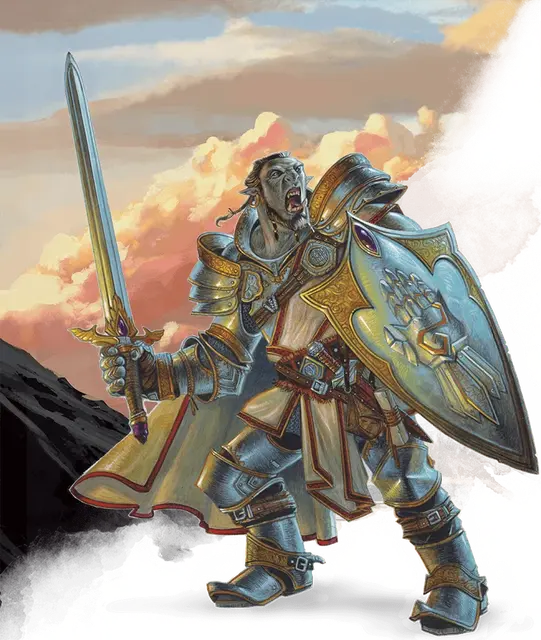

Паладин
Paladin

Кость Хитов 1к10 за каждый уровень паладина
Хиты на 1 уровне 10 + модификатор Телосложения
Хиты на следующих уровнях 1к10 (или 6) + модификатор Телосложения (суммарно минимум 1) за каждый уровень паладина после первого
Доспехи Все виды доспехов, щиты
Оружие Простое оружие, воинское оружие
Инструменты нет
Спасброски Мудрость, Харизма
Навыки Выберите два навыка из следующих: Атлетика, Запугивание, Медицина, Проницательность, Религия, Убеждение
Снаряжение Вы начинаете со следующим снаряжением в дополнение к снаряжению, полученному за вашу предысторию:
• а) воинское оружие и щит или б) два воинских оружия
• а) пять метательных копий или б) любое простое рукопашное оружие
• а) набор священника или б) набор путешественника
• Кольчуга и священный символ
Если вы откажетесь от этого снаряжения, а также от предметов, предлагаемых вашей предысторией, то вы начнёте игру с 5к4×10 зм для покупки снаряжения.
| Уровень | Бонус мастерства | Умения | Ячейки заклинаний на уровень заклинаний | ||||
|---|---|---|---|---|---|---|---|
| 1 | 2 | 3 | 4 | 5 | |||
| 1 | +2 | Божественное чувство, Наложение рук | - | - | - | - | - |
| 2 | +2 | Боевой стиль, Использование заклинаний, Божественная кара, Варианты боевых стилей | 2 | - | - | - | - |
| 3 | +2 | Божественное здоровье, Священная клятва, Праведное восстановление | 3 | - | - | - | - |
| 4 | +2 | Увеличение характеристик, Универсальность воина | 3 | - | - | - | - |
| 5 | +3 | Дополнительная атака | 4 | 2 | - | - | - |
| 6 | +3 | Аура защиты | 4 | 2 | - | - | - |
| 7 | +3 | Умение священной клятвы | 4 | 3 | - | - | - |
| 8 | +3 | Увеличение характеристик | 4 | 3 | - | - | - |
| 9 | +4 | - | 4 | 3 | 2 | - | - |
| 10 | +4 | Аура отваги | 4 | 3 | 2 | - | - |
| 11 | +4 | Улучшенная божественная кара | 4 | 3 | 3 | - | - |
| 12 | +4 | Увеличение характеристик | 4 | 3 | 3 | - | - |
| 13 | +5 | - | 4 | 3 | 3 | 1 | - |
| 14 | +5 | Очищающее касание | 4 | 3 | 3 | 1 | - |
| 15 | +5 | Умение священной клятвы | 4 | 3 | 3 | 2 | - |
| 16 | +5 | Увеличение характеристик | 4 | 3 | 3 | 2 | - |
| 17 | +6 | - | 4 | 3 | 3 | 3 | 1 |
| 18 | +6 | Улучшения ауры | 4 | 3 | 3 | 3 | 1 |
| 19 | +6 | Увеличение характеристик | 4 | 3 | 3 | 3 | 2 |
| 20 | +6 | Умение священной клятвы | 4 | 3 | 3 | 3 | 2 |
Описание
Закованный в латы, сверкающие на солнце, несмотря на пыль и грязь долгого путешествия, человек складывает свой меч и щит и касается ладонями смертельно раненного мужчины. Божественное сияние исходит из его рук, и раны мужчины затягиваются, а глаза широко раскрываются в изумлении.
Дварф пригнулся к земле за камнем. Его чёрный плащ делал его почти невидимым в ночи, и он смотрел, как шайка орков праздновала недавнюю победу. Он тихо крадётся к ним и шепчет свою присягу, и двое орков умирают еще до того, как понимают, что он здесь был.
Серебряные волосы сверкают в лучах света, которые, кажется, льются только на торжественно смеющегося эльфа. Его копьё вспыхивает, подобно его глазам, когда он снова и снова наносит удары уродливому великану, до тех пор, пока его свет не преодолевает отвратительную тьму.
Вне зависимости от происхождения и миссии, паладинов объединяет их клятва противостоять силам зла. Принесённая ли перед алтарём бога и заверенная священником, или же на священной поляне перед духами природы и феями, или в момент отчаяния и горя смерти, присяга паладина — могущественный договор. Это источник силы, который превращает набожного воина в благословенного героя.
Использовать TCE
Создание персонажа
Источник праведности
Паладин клянётся защищать справедливость и праведность, отстаивать добродетели мира перед вторжениями тьмы, и охотиться на силы зла, где бы они ни скрывались. Разные паладины сосредотачиваются на различных аспектах праведности, но все они связаны клятвой, которая даёт им силы для совершения их священного дела. Хотя многие паладины преданы богам добра, сила паладина происходит в неменьшей степени от собственного стремления к справедливости, чем от божества.
Паладины тренируются годами, чтобы обучиться навыкам боя, осваивая владение различными видами оружия и доспехов. Тем не менее, их воинские навыки вторичны по сравнению с магической силой, которой они обладают: силой исцелять больных и раненых, карать нечестивцев и нежить, защищать невинных и тех, кто присоединился к ним в борьбе за справедливость.
За мирской жизнью
Жизнь паладина это жизнь искателя приключений. Пока тяжёлые травмы не сделают их инвалидами, паладины проживают жизнь на линии фронта мировой борьбы со злом. В рядах ополчений и армий мира мало представителей класса воин, и еще меньшее количество простых людей могут претендовать на истинное звание паладина. Услышав зов, эти воины оставляют прежнее ремесло и берут в руки оружие, чтобы бороться со злом. Иногда их клятвы приводят их на службу государям в качестве лидеров элитных групп рыцарей, но даже тогда их верность в первую очередь отдана делу праведности, а не короне или стране.
Ставшие искателями приключений паладины относятся к своему делу серьёзно. Поход в древние руины или пыльный склеп может быть обусловлен поиском более высокой цели, чем поход за сокровищами. Зло таится в подземельях и дремучих лесах, и даже самые скромные победы над ним могут удержать мировое равновесие от небытия.
Создание паладина
Наиболее важным аспектом персонажа-паладина является природа его святого задания. Хотя классовые умения, связанные с вашей клятвой, не проявляются до достижения 3 уровня, приготовьтесь заранее, прочитав описание клятв в конце описания класса. Вы преданный слуга добра, лояльный к богам справедливости и чести, святой рыцарь в сияющих доспехах, отважившийся идти вперёд, чтобы поразить зло? Вы доблестный чемпион света, лелеющий всё прекрасное, что выступает против тьмы, рыцарь, чья клятва старше, чем многие из богов? Или вы озлобленный одиночка, поклявшийся отомстить тем, кто совершил великое зло, посланный подобно ангелу смерти богами или обуреваемый личной необходимостью мести? Приложение Б перечисляет множество божеств, которым поклоняются паладины всей мультивселенной, например, Торм, Тир, Хейрониус, Паладайн, Кири-Джолит, Дол Арра, Серебряное Пламя, Багамут, Афина, Ра-Хорахти и Хеймдалль.
Как вы получили призыв к тому, чтобы стать паладином? Вы услышали шёпот невидимого бога или ангела во время молитвы? Другой паладин почувствовал ваш потенциал и решил тренировать вас в качестве оруженосца? Или случилось какое-то ужасное событие — уничтожение вашего дома, которое, возможно, послужило отправной точкой ваших исканий? Может быть, вы наткнулись в священной роще на тайный эльфийский анклав, и нашли себя в защите всех подобных убежищ добра и красоты? Или вы знали с самых ранних воспоминаний, что жизнь паладина была вашим призванием, подобно тому, как если бы вы были посланы в мир с целью, отпечатанной в вашей душе.
Противостоящие силам зла паладины редко имеют любое злое мировоззрение. Большинство из них следует пути милосердия и справедливости. Подумайте, как ваше мировоззрение ведёт вас по пути святого задания, и каким образом оно определяет поведение перед богами и смертными. Ваша клятва и мировоззрение могут находиться в гармонии, или ваша клятва может представлять стандарты поведения, которых вы еще не достигли.
Быстрое создание
Вы можете быстро создать паладина, следуя этим рекомендациям. Во-первых, у вашей Силы должно быть наивысшее значение. Следующим по величине должно быть значение Харизмы. Во-вторых, выберите предысторию «благородный».
Углублённая предыстория Паладина (XGE)
Паладин являет собой живое олицетворение клятвы — обета или присяги, воплощённой в лице святого воина, у которого хватает навыков и целеустремлённости довести дело до конца. Некоторые паладины посвящают себя непосредственно защите невинных и распространению правосудия в мире, тогда как другие пытаются достичь этого, покоряя тех, кто дерзнёт встать у них на пути и заставляя их преклониться перед законом.
И хотя в мире нельзя найти паладина, которого можно было бы назвать типичным, некоторая часть из них является узко мыслящими деятелями, заставляющими всех творить добро, которые не собираются терпеть даже самое малое отклонение от их собственных взглядов. Паладины, которые вступили на путь искателей приключений, впрочем, редко остаются столь непреклонными в своих взглядах, — хотя бы чтобы не отдаляться от своих компаньонов.
Вы можете более полно воплотить своего паладина, используя предложенные ниже варианты. Важно помнить, что большинство паладинов не являются роботами. У них тоже возникают сомнения и предвзятости, их так же, как и прочих персонажей, посещают противоречивые мысли. И некоторые их внутренние мотивы вполне могут иногда противоречить принципам их клятв.
Личная цель
Слова клятвы паладина предоставляют персонажу цель и устремления или обобщённые намерения, которые преследует паладин. Кроме этого, некоторые паладины движимы личными целями, которые либо совпадают, либо идут вразрез с догматами их клятвы. Паладины, принявшие различные клятвы, могут иметь одинаковые личные цели, различаясь только тем, как они действуют на пути к этим целям, придерживаясь принесённых обетов.
Если ваш паладин имеет личную цель, она может происходить из какого-то жизненного события и потому может не быть напрямую связана с клятвой.
Личные цели
| к6 | Цель |
| 1 | Мир. Вы сражаетесь для того, чтобы этого не пришлось делать будущим поколениям. |
| 2 | Месть. Ваша клятва служит лишь средством, с помощью которого вы собираетесь исправить древнюю несправедливость. |
| 3 | Долг. Вы живёте, чтобы служить тому, чему принесли клятву, и умрёте ради этого. |
| 4 | Лидерство. Вы собираетесь победить в великой битве, о которой барды будут слагать свои песни и тем самым вы станете примером и вдохновением для других. |
| 5 | Вера. Вы знаете, что ваш путь праведный, ведь иначе боги не направили бы вас по нему. |
| 6 | Слава. Вы приведёте мир в новую великую эру, которая будет отмечена вашим именем. |
Символ
Паладины осознают влияние символов, и многие из них перенимают или самостоятельно придумывают какое-то изобразительное средство, выглядящее, как отличительный символ. Ваш символ отражает клятву, которую вы принесли, и сообщает об этом окружающим, будь то товарищи или противники.
Ваш символ может быть изображён на штандарте, флаге или одежде, которые видны всем. Или он может быть менее очевиден и выполнен в виде подвески или безделушки, которую вы носите при себе.
Символы
| к6 | Символ |
| 1 | Дракон, символ вашего благородства в мирное время и свирепости в бою. |
| 2 | Сжатый кулак, показывающий вашу постоянную готовность сражаться за свои убеждения |
| 3 | Поднятая открытая ладонь, демонстрирующая ваше предпочтение дипломатии прежде боя |
| 4 | Красное сердце, показывающее миру вашу приверженность справедливости |
| 5 | Чёрное сердце, символизирующее, что эмоции вроде жалости не мешают вашей приверженности клятве |
| 6 | Немигающее око, означающее, что вы всегда находитесь на страже вашего дела от угроз |
Супостат
Приверженность священной клятве требует от паладинов занимать активную позицию в воплощении их ценностей в мире. Такая деятельность естественно вступает в конфликт с существами и сущностями, которые эти ценности не поддерживают. Среди этих противников некоторые часто выступают в качестве наиболее мощного или дольше всего противостоящего паладину врага — супостата, чьё присутствие или влияние является постоянным фактором, присутствующим в жизни паладина.
Паладин может иметь врага, который появился ещё до того, как он стал на этот путь. Или же вы могли стать целью из-за того, что вступив на путь паладина, вы немедленно привлекли внимание тех, кто был против этого. Если у вас есть личный супостат, то кто или что это? Кого среди своих врагов вы считаете наибольшей угрозой в достижении собственных целей?
Супостаты
| к6 | Супостат |
| 1 | Могучий вождь орков, угрожающий уничтожить и растоптать всё, что для вас священно |
| 2 | Исчадие или Небожитель, посланник Внешних Планов, который намеревается развратить или наставить вас на путь искупления соответственно |
| 3 | Дракон, чьи слуги идут по вашему следу |
| 4 | Первосвященник, который считает вас запутавшимся глупцом и желающий, чтобы вы оставили свою религию |
| 5 | Соперник-паладин, обучавшийся вместе с вами, но ставший клятвопреступником и считающий вас виновным в этом |
| 6 | Вампир, который поклялся отомстить всем паладинам после того, как был побеждён одним из них |
Искушение
Хотя паладины преданы своим клятвам, они всё ещё являются смертными, а потому у них есть недостатки. Многие из них демонстрируют поведение или отношение, не соответствующее их высоким идеалам или их призванию.
Что служит искушением, которому подвергается ваш персонаж и чему он с трудом может противиться?
Искушения
| к6 | Искушение |
| 1 | Гнев. Когда гнев охватывает вас, вы не можете трезво мыслить и боитесь, что можете сделать что-то, о чём позже пожалеете. |
| 2 | Гордыня. Ваши дела достойны того, чтобы их заметили, но никто не говорит о них так часто, как вы. |
| 3 | Похоть. Вы не можете пройти мимо миловидного личика или хорошенькой улыбки. |
| 4 | Зависть. Вы завидуете достижениям некоторых известных личностей и чувствуете себя неполноценным, когда ваши дела не могут сравниться с ними. |
| 5 | Отчаяние. Вы считаете силы врагов, которых вам предстоит победить, слишком большими, и подчас вы не видите пути к победе. |
| 6 | Алчность. Независимо от того, сколько славы и сокровищ вы добыли, этого всегда мало. |
Мультиклассирование
МУЛЬТИКЛАССИРОВАНИЕ И Паладин
Если вы используете опциональное правило по мультиклассированию из «Книги игрока», вот что вам нужно знать при выборе паладина в качестве одного из ваших классов.
Минимальные значения характеристик. Вы должны иметь значение Силы и Харизмы не ниже 13, чтобы взять уровень в этом классе или взять уровень другого класса, если вы уже являетесь паладином.
Получаемые владения. Если паладин не является вашим начальным классом, вот владения, которые вы приобретаете, когда берете свой первый уровень паладина: лёгкие доспехи, средние доспехи, щиты, простое оружие, воинское оружие.
Ячейки заклинаний. Добавьте половину ваших уровней (округленных в меньшую сторону) в классе паладина к соответствующим уровням других классов, чтобы определить доступные ячейки заклинаний.
Уровень 1: Божественное чувство
1-й уровень, умение паладина
Присутствие сильного зла воспринимается вашими чувствами как неприятный запах, а могущественное добро звучит как небесная музыка в ваших ушах. Вы можете действием открыть своё сознание для обнаружения таких сил. Вы до конца своего следующего хода знаете местоположение всех Исчадий, Небожителей и Нежити в пределах 60 футов, не имеющих полного укрытия. Вы знаете вид (Исчадие, Небожитель, Нежить) любого существа, чьё присутствие вы чувствуете, но не можете определить, кто это конкретно (например, вампир граф Страд фон Зарович). В этом же радиусе вы также обнаруживаете присутствие мест и предметов, которые были освящены или осквернены, например, заклинанием святилище [hallow].
Вы можете использовать это умение количество раз, равное 1 + модификатор Харизмы. Когда вы заканчиваете продолжительный отдых, вы восстанавливаете все потраченные использования.
Уровень 1: Наложение рук
1-й уровень, умение паладина
Ваше благословенное касание может лечить раны. У вас есть запас целительной силы, который восстанавливается после продолжительного отдыха. При помощи этого запаса вы можете восстанавливать количество хитов, равное уровню паладина, умноженному на 5.
Вы можете действием коснуться существа и, зачерпнув силу из запаса, восстановить количество хитов этого существа на любое число, вплоть до максимума, оставшегося в вашем запасе.
В качестве альтернативы, вы можете потратить 5 хитов из вашего запаса хитов для излечения цели от одной болезни или одного действующего на неё яда. Вы можете устранить несколько эффектов болезни и ядов одним использованием «Наложения рук», тратя хиты отдельно для каждого эффекта.
Это умение не оказывает никакого эффекта на Нежить и Конструктов.
Уровень 2: Боевой стиль
2-й уровень, умение паладина
Вы выбираете боевой стиль, соответствующий вашей специализации. Выберите один из следующих вариантов. Вы не можете выбирать один и тот же вариант боевого стиля, даже если позже у вас будет возможность выбрать еще один стиль.
Уровень 2: Дуэлянт
Пока вы держите рукопашное оружие в одной руке, и не используете другого оружия, вы получаете бонус +2 к броскам урона этим оружием.
Уровень 2: Защита
Если существо, которое вы видите, атакует не вас, а другое существо, находящееся в пределах 5 футов от вас, вы можете реакцией создать помеху его броску атаки. Для этого вы должны использовать щит.
Уровень 2: Оборона
Пока вы носите доспехи, вы получаете бонус +1 к КД.
Уровень 2: Сражение большим оружием
Если у вас выпало «1» или «2» на кости урона при атаке, которую вы совершали рукопашным оружием, удерживая его двумя руками, то вы можете перебросить эту кость, и должны использовать новый результат. Чтобы воспользоваться этим преимуществом, ваше оружие должно иметь свойство «двуручное» или «универсальное».
Уровень 2: Благословенный воин (опционально)
Опциональный вариант боевого стиля
Вы узнаёте два заговора по вашему выбору из списка заклинаний жреца. Для вас они считаются заклинаниями паладина, а базовой характеристикой для этих заклинаний является ваша Харизма. Каждый раз, когда вы получаете уровень в этом классе, вы можете заменить один из заговоров на другой из списка заклинаний жреца.
Перехват
Опциональный вариант боевого стиля
Когда существо, которое вы можете видеть, попадает атакой по цели в пределах 5 футов от вас (но не по вам), вы можете реакцией уменьшить урон, получаемый целью, на количество, равное 1к10 + ваш бонус мастерства (вплоть до 0 урона). Чтобы использовать эту реакцию, вы должны держать в руках щит либо простое или воинское оружие.
Сражение вслепую
Опциональный вариант боевого стиля
Вы получаете слепое зрение в пределах 10 футов. В пределах этой дистанции вы можете видеть всё, что не находится за полным укрытием, даже если вы ослеплены или находитесь в темноте. Более того, вы можете увидеть невидимое существо в пределах этой дистанции, если только оно не преуспело в попытке спрятаться от вас.
Уровень 2: Использование заклинаний
2-й уровень, умение паладина
Вы узнаёте, как черпать божественную магию посредством медитации и молитв, чтобы творить заклятья подобно жрецу. Вы найдёте список заклинаний, доступных паладину, в этом разделе: заклинания паладина. Так же правила по использованию заклинаний есть в этой статье: использование заклинаний.
Уровень 2: Подготовка и сотворение заклинаний
Таблица «Паладин» демонстрирует, какое количество ячеек для накладывания заклинаний паладина у вас есть. Для накладывания одного из этих заклинаний вы должны потратить ячейку заклинаний того же уровня или выше, что и само заклинание. Вы восстановите все потраченные ячейки, когда завершите продолжительный отдых.
Вы подготавливаете список заклинаний паладина, доступных для накладывания. При этом вы выбираете число заклинаний паладина из списка заклинаний паладина, равное модификатору Харизмы + половина уровня паладина, округляя в меньшую сторону (минимум одно заклинание). Уровень заклинаний не должен превышать уровень самой высокой имеющейся у вас ячейки заклинаний. Например, если вы паладин 5-го уровня, то у вас есть четыре ячейки заклинаний 1-го уровня и две ячейки 2-го уровня. При Харизме 14 ваш список подготовленных заклинаний может включать в себя четыре заклинания 1-го или 2-го уровня, в любой комбинации. Если вы подготовили заклинание 1-го уровня лечение ран [cure wounds], вы можете наложить его, используя ячейку 1-го уровня или ячейку 2-го уровня. Накладывание заклинания не удаляет его из списка подготовленных заклинаний.
Вы можете изменить список подготовленных заклинаний, когда завершаете продолжительный отдых. Подготовка нового списка заклинаний паладина требует времени, проведённого в молитвах и медитации: не менее 1 минуты за уровень заклинания для каждого заклинания в вашем списке.
Уровень 2: Базовая характеристика заклинаний
Заклинания паладина накладываются с помощью Харизмы, так как их мощь проистекает из силы ваших убеждений. Вы используете Харизму в случаях, когда заклинание ссылается на базовую характеристику. Кроме того, вы используете модификатор Харизмы при определении Сл спасбросков от ваших заклинаний паладина, и при броске атаки заклинаниями.
Сл спасброска = 8 + ваш бонус мастерства + ваш модификатор Харизмы
Модификатор броска атаки = ваш бонус мастерства + ваш модификатор Харизмы
Уровень 2: Фокусировка заклинания
Вы можете использовать священный символ в качестве заклинательной фокусировки для заклинаний паладина.
Уровень 2: Дополнительные заклинания паладина (опционально)
Заклинания из представленного ниже списка расширяют ваш список заклинаний паладина, представленный в «Книге игрока». Список отсортирован по уровню заклинаний, а не по уровню персонажа.
| Уровень заклинания | Заклинания |
| 2 | нетленные останки [gentle repose], молебен лечения [prayer of healing], охраняющая связь [wanding bond] |
| 3 | покров духа [spirit shroud] |
| 5 | призыв духа небожителя [summon celestial] |
Уровень 2: Божественная кара
2-й уровень, умение паладина
Если вы попадаете по существу рукопашной атакой оружием, вы можете потратить одну ячейку заклинаний любого своего класса для причинения цели урона излучением, который добавится к урону от оружия. Дополнительный урон равен 2к8 за ячейку 1-го уровня и ещё 1к8 за каждый уровень ячейки выше первого до максимума в 5к8. Если цель — Нежить или Исчадие, урон увеличивается на 1к8 с максимумом 6к8.
Уровень 3: Божественное здоровье
3-й уровень, умение паладина
Божественная магия, текущая через вас, даёт вам иммунитет к болезням.
Уровень 3: Священная клятва
3-й уровень, умение паладина
Вы даёте клятву, навсегда связывающую вас как паладина. До этого момента вы были в подготовительной стадии, следуя по пути, но ещё не дав присягу. Все клятвы подробно рассмотрены ниже. Ваш выбор предоставляет вам умения на 3-м, 7-м, 15-м и 20-м уровнях. Эти умения включают в себя заклинания клятвы и умения «Божественного канала».
Уровень 3: Заклинания клятвы
Каждая клятва имеет список связанных с ней заклинаний. Вы получаете доступ к этим заклинаниям на уровнях, указанных в описании клятвы. После того как вы получаете доступ к заклинанию клятвы, оно всегда у вас подготовлено. Заклинания клятвы не учитываются в количестве заклинаний, которые можно подготовить каждый день. Если вы получаете заклинание клятвы, которое не входит в список заклинаний паладина, это заклинание всё равно считается заклинанием паладина для вас.
Уровень 3: Божественный канал
Ваша клятва позволяет направлять божественную энергию, чтобы подпитывать магические эффекты. Каждый вариант «Божественного канала», предоставленный клятвой, объясняет, как его использовать.
Когда вы используете ваш «Божественный канал», вы выбираете, какой эффект создать. Затем вы должны окончить короткий или продолжительный отдых, чтобы использовать «Божественный канал» снова.
Некоторые эффекты «Божественного канала» требуют совершить спасбросок. Когда вы используете эффекты такого рода, Сл равна Сл спасброска от ваших заклинаний паладина.
Уровень 3: Праведное восстановление (опционально)
Вы можете использовать «Божественный канал», чтобы подпитать свои заклинания. Бонусным действием вы касаетесь своего священного символа, произносите молитву и возвращаете одну потраченную ячейку заклинаний, уровень которой не превышает половины вашего бонуса мастерства (с округлением в большую сторону). Вы можете использовать это умение количество раз, зависящее от уровня в этом классе: один раз на 3-м уровне, два раза на 7-м уровне, три раза на 15-м уровне. Вы восстанавливаете все потраченные использования после окончания продолжительного отдыха.
Уровень 4: Увеличение характеристик
4-й уровень, умение паладина
При достижении 4-го, 8-го, 12-го, 16-го и 19-го уровней вы можете повысить значение одной из ваших характеристик на 2 или двух характеристик на 1. Как обычно, значение характеристики при этом не должно превысить 20.
Если ваш Мастер разрешает использование черт, вы можете отказаться от преимуществ этого умения при повышении значений характеристик и вместо этого взять черту.
Уровень 4: Универсальность воина (опционально)
Каждый раз, когда вы достигаете определённого уровня в этом классе, и получаете умение «Увеличение характеристик», вы можете заменить известный вам боевой стиль на другой, доступный паладину. Эта замена отражает смену направления вашего развития в боевых практиках.
Уровень 5: Дополнительная атака
5-й уровень, умение паладина
Если вы в свой ход совершаете действие Атака, вы можете совершить две атаки вместо одной.
Уровень 6: Аура защиты
6-й уровень, умение паладина
Если вы или дружественное существо в пределах 10 футов от вас должны совершить спасбросок, это существо получает бонус к спасброску, равный модификатору вашей Харизмы (минимальный бонус +1). Вы должны находиться в сознании, чтобы предоставлять этот бонус. На 18-м уровне дистанция этой ауры увеличивается до 30 футов.
Уровень 10: Аура отваги
10-й уровень, умение паладина
Вы и дружественные существа в пределах 10 футов от вас не можете быть испуганы, пока вы находитесь в сознании. На 18-м уровне дистанция этой ауры увеличивается до 30 футов.
Уровень 11: Улучшенная божественная кара
11-й уровень, умение паладина
Вы проникаетесь праведной мощью, что даёт всем вашим ударам рукопашным оружием божественную силу. Каждый раз, когда вы попадаете по существу рукопашным оружием, это существо получает дополнительные 1к8 урона излучением.
Уровень 14: Очищающее касание
14-й уровень, умение паладина
Вы можете действием окончить действие заклинания на себе или на одном согласном существе, которого вы касаетесь. Вы можете использовать это умение количество раз, равное вашему модификатору Харизмы (минимум 1). Вы восстанавливаете потраченные использования, когда завершаете продолжительный отдых.
Подклассы
Клятва преданности
Клятва паладина связывает его с возвышенными идеалами справедливости, добродетели и порядка. Иногда называемые кавалерами, белыми рыцарями или святыми воителями, эти паладины подходят под идеал рыцаря в сияющих доспехах, действуя с честью в стремлении к справедливости и высшему благу. Они поддерживают самые высокие нормы поведения, и некоторые, к лучшему или худшему, приводят мир к тем же стандартам. Многие давшие эту клятву, почитают богов добра и закона, и следуют их догматам в качестве доказательства своей преданности. Они почитают ангелов — совершенных слуг добра — за свои идеалы, и изображают ангельские крылья на шлемах и гербах.
Догматы преданности
Хотя точные слова и смысл клятвы преданности варьируются, паладины данной клятвы разделяют следующие принципы:
Честность. Не лгите и не обманывайте. Да будет слово ваше незыблемо.
Отвага. Никогда не бойтесь действовать, хотя и проявляя мудрость в осторожности.
Сострадание. Помогайте другим, защищайте слабых и карайте тех, кто угрожает им. Проявляйте милосердие к врагам, но смягчайтесь мудро.
Честь. Относитесь к людям по справедливости, и пусть ваши благородные дела будут примером для них. Делайте как можно больше добра, и как можно меньше дурного.
Долг. Отвечайте за свои действия и их последствия, защищая тех, кого оберегаете, и подчиняйтесь тем, кто имеет власть над вами.
Уровень 3: Заклинания клятвы
Вы получаете заклинания клятвы на указанных уровнях паладина.
Заклинания клятвы преданности
Уровень 3: Божественный канал
Когда вы даёте эту клятву, вы получаете следующие два варианта использования «Божественного канала».
Священное оружие. Вы можете действием наполнить одно оружие, которое вы держите, позитивной энергией, используя «Божественный канал». На протяжении 1 минуты вы добавляете свой модификатор Харизмы к броскам атаки, сделанным этим оружием (минимальный бонус +1). Также оружие испускает яркий свет в радиусе 20 футов и тусклый свет в пределах еще 20 футов. Если оружие не является волшебным, то оно считается волшебным в течение этого времени. Вы можете закончить этот эффект в свой ход частью любого другого действия. Если вы не держите или не несёте это оружие, или теряете сознание, то этот эффект заканчивается.
Изгнать нечистого. Вы действием показываете свой священный символ и произносите слова молитвы, осуждающей Исчадия и Нежить, используя «Божественный канал». Все Исчадия и Нежить, которые могут видеть или слышать вас, находящиеся в пределах 30 футов от вас, должны совершить спасбросок Мудрости. Если они проваливают спасбросок, то изгоняются на 1 минуту или до тех пор, пока не получат урон.
Изгнанные существа должны весь свой ход пытаться убежать от вас так далеко, как только могут, и не могут добровольно переместиться в пространство, находящееся в пределах 30 футов от вас. Также они не могут совершать реакции. Из всех действий они могут совершать только Рывок и попытки избежать эффекта, не дающего им перемещаться. Если же двигаться некуда, существа могут использовать действие Уклонение.
Уровень 7: Аура преданности
Вы и дружественные вам существа в пределах 10 футов от вас не могут быть очарованы, пока вы находитесь в сознании. На 18-м уровне радиус ауры увеличивается до 30 футов.
Уровень 15: Чистота духа
Вы всегда находитесь под эффектом заклинания защита от зла и добра [protection from evil and good].
Уровень 20: Святой нимб
Вы можете действием создать ауру солнечного света. В течение 1 минуты от вас исходит яркий свет в радиусе 30 футов, и тусклый свет в пределах еще 30 футов.
Каждый раз, когда враждебное существо начинает ход в этом ярком свете, оно получает урон излучением 10.
Кроме того, в течение этого времени вы совершаете с преимуществом спасброски от заклинаний, наложенных Исчадиями и Нежитью.
Один раз использовав это умение, вы не можете использовать его повторно, пока не закончите продолжительный отдых.
Клятва древних
Клятва Древних так же стара, как раса эльфов и ритуалы друидов. Иногда называемые фейскими рыцарями, зелёными рыцарями, или рогатыми рыцарями, паладины, которые дали эту клятву, связывают свою судьбу со стороной света в мировой борьбе против тьмы, потому что они любят красивые и животворные вещи в мире, а не потому, что верят в принципы чести, отваги и справедливости. Они украшают свои доспехи и одежду изображениями растительности, рогов и цветов, чтобы отразить свою приверженность сохранению в мире света и жизни.
Догматы древних
Догматы клятвы Древних сохранялись в течение бессчётных веков. Эта клятва подчёркивает главенство принципов добра над проблемами порядка или хаоса. Её основные четыре принципа просты:
Разожги свет. Делами милосердия, доброты и прощения разжигай свет надежды в мире, повергая ниц отчаяние.
Сохраняй свет. Там, где есть добро, красота, любовь и смех в мире, стой против бесчестья, чтобы побороть его. Там, где процветает жизнь, стой против сил, что хотят погубить её.
Храни свет в себе. Восторгайся песней и смехом, красотой и искусством. Если позволишь свету умереть в своём сердце, то не сможешь сохранить его в мире.
Будь светом. Будь маяком великолепия для тех, кто живёт в отчаянии. Пусть свет твоей отваги и мужества сияет в твоих делах.
Уровень 3: Заклинания клятвы
Вы получаете заклинания клятвы на указанных уровнях паладина.
Заклинания клятвы древних
Уровень 3: Божественный канал
Когда вы даёте эту клятву, вы получаете следующие два варианта использования «Божественного канала».
Гнев природы. Вы можете использовать «Божественный канал», чтобы призвать первородные силы для опутывания врага. Вы можете действием опутать призрачными лозами существо, которое вы можете видеть, и которое находится в пределах 10 футов от вас. Это существо должно преуспеть в спасброске Силы или Ловкости (по своему выбору), иначе оно станет опутанным. Опутанное лозами существо повторяет спасбросок в конце каждого своего хода. В случае успеха оно освобождается, а лозы исчезают.
Изгнать неверного. Вы можете использовать «Божественный канал» для произнесения древних слов, причиняющих боль Феям и Исчадиям, когда они слышат их. Вы действием демонстрируете свой священный символ и все Феи и Исчадия в пределах 30 футов от вас, слышащие вас, должны совершить спасбросок Мудрости. Провалив его, существо изгоняется на 1 минуту или пока не получит урон.
Изгнанные существа должны весь свой ход пытаться убежать от вас так далеко, как только могут, и не могут добровольно переместиться в пространство, находящееся в пределах 30 футов от вас. Также они не могут совершать реакции. Из всех действий они могут совершать только Рывок и попытки избежать эффекта, не дающего им перемещаться. Если же двигаться некуда, существа могут использовать действие Уклонение.
Если истинная форма существа скрыта иллюзией, изменением облика, или другим эффектом, скрывающим её, то она раскрывается, когда существо изгоняется.
Уровень 7: Аура опеки
Древняя магия так сильно вас пропитывает, что образует мистическую защиту. Вы и дружественные существа в пределах 10 футов от вас получаете сопротивление урону от заклинаний.
На 18-м уровне радиус ауры увеличивается до 30 футов.
Уровень 15: Бессмертный страж
Если ваши хиты опускаются до 0, но вы не были убиты, вы можете решить, чтобы вы вместо этого остались с 1 хитом. Использовав это умение, вы не можете повторно его использовать, пока не окончите продолжительный отдых. Кроме того, вы не получаете недостатков от большого возраста, и не можете быть состарены магией.
Уровень 20: Древний чемпион
Вы можете принимать форму древней силы природы, выбрав её внешний вид. Например, ваша кожа может позеленеть или превратиться в кору, а ваши волосы могут стать листьями или мхом, или у вас могут вырасти рога или львиная грива.
Вы можете действием подвергнуться этой трансформации. На 1 минуту вы получаете следующие преимущества:
- В начале каждого своего хода вы восстанавливаете 10 хитов.
- Каждый раз, когда вы накладываете заклинание паладина, которое накладывается «1 действием», вы можете вместо этого наложить его бонусным действием.
- Вражеские существа в пределах 10 футов от вас совершают с помехой спасброски от ваших заклинаний паладина и умений «Божественного канала».
Использовав это умение, вы сможете использовать его повторно только после окончания продолжительного отдыха.
Клятва мести
Давая клятву мести, вы берёте на себя торжественное обязательство карать тех, кто совершил тяжкий грех. Когда силы зла вырезают беспомощных селян, когда целый народ отворачивается от воли богов, когда гильдия воров становится слишком жестокой и сильной, когда дракон терроризирует сельскую местность — в такие времена появляются паладины, давшие клятву мести, чтобы установить, что правильно, а что ошибочно. Для этих паладинов, иногда называемых мстителями или тёмными рыцарями, собственная чистота не так важна, как сотворение правосудия.
Догматы мести
Догматы клятвы мести разнятся от паладина к паладину, но все принципы сводятся к наказанию преступников, любой ценой. Паладины, отстаивающие эти принципы, готовы пожертвовать даже собственной праведностью, чтобы совершить правосудие над теми, кто творит зло, и такие паладины часто нейтральны или законно-нейтральны. Основные принципы догматов жестоки, но просты:
Сражайся с большим злом. При выборе между борьбой с заклятыми врагами и боем с меньшим злом, я выбираю большее зло.
Не щадить зло. Обычные враги могут рассчитывать на пощаду, но только не мои заклятые враги.
Любой ценой. Мои угрызения совести не могут встать на пути истребления моих врагов.
Возмещение. Если мои враги сеют разруху в мире, то это потому, что мне не удалось их остановить. Я должен помочь тем, кто пострадал от их злодеяний.
Уровень 3: Заклинания клятвы
Вы получаете заклинания клятвы на указанных уровнях паладина.
Заклинания клятвы мести
| Уровень паладина | Заклинания |
| 3 | метка охотника [hunter’s mark], порча [bane] |
| 5 | туманный шаг [misty step], удержание личности [hold person] |
| 9 | защита от энергии [protection from energy], ускорение [haste] |
| 13 | изгнание [banishment], переносящая дверь [dimension door] |
| 17 | наблюдение [scrying], удержание чудовища [hold monster] |
Уровень 3: Божественный канал
Когда вы даёте эту клятву, вы получаете следующие два варианта использования «Божественного канала».
Порицание врага. Вы действием демонстрируете свой священный символ и произносите обличающую молитву, используя «Божественный канал». Выберите одно существо в пределах 60 футов, которое можете видеть. Это существо должно совершить спасбросок Мудрости, если не обладает иммунитетом к испугу. Исчадия и Нежить совершают этот спасбросок с помехой.
Если спасбросок провален, существо становится испуганным на 1 минуту, или пока не получит урон. Пока существо испугано, его скорость равна 0, и оно не получает никаких бонусов к скорости.
Если спасбросок был успешен, скорость существа на 1 минуту, или пока оно не получает урон, уменьшается вдвое.
Обет вражды. Вы можете бонусным действием произнести слова обета вражды по отношению к существу, которое вы можете видеть, и которое находится в пределах 10 футов от вас, используя «Божественный канал». В течение 1 минуты, пока его хиты не опускаются до 0, или оно не потеряет сознание, вы совершаете броски атаки по нему с преимуществом.
Уровень 7: Неумолимый мститель
Ваше сверхъестественное внимание помогает вам предотвратить бегство врага. Если вы попадаете по существу провоцированной атакой, вы можете частью этой реакции переместиться на расстояние, равное половине своей скорости. Это перемещение не провоцирует атаки.
Уровень 15: Душа мести
Суть вашего «Обета вражды» даёт вам большую власть над врагом. Когда существо, находящееся под действием вашего «Обета вражды», совершает атаку, вы можете реакцией совершить рукопашную атаку оружием по этому существу, если оно находится в пределах досягаемости.
Уровень 20: Мстящий ангел
Вы можете принять облик ангельского мстителя. Вы действием проходите трансформацию. На 1 час вы получаете следующие преимущества:
- Из вашей спины вырастают крылья, дающие вам скорость полёта 60 футов.
- Вы излучаете ауру угрозы в радиусе 30 футов. Когда враг впервые входит в ауру или начинает в ней свой ход во время сражения, он должен преуспеть в спасброске Мудрости, иначе он станет испуганным в течение 1 минуты, или пока не получит урон. Броски атаки по этому испуганному существу совершаются с преимуществом.
Использовав это умение, вы можете использовать его повторно только после окончания продолжительного отдыха.
Клятвопреступник
Источник: «Dungeon Master Guide»
Хотя этот подкласс официально опубликован в троекнижии, он не относится к числу доступных по умолчанию. Будучи опубликованным в «Руководстве Мастера», этот подкласс затрагивает темы и методы, обычно идущие вразрез с классическим образом искателя приключений. Если вы хотите выбрать этот подкласс, то обсудите эту возможность с вашим Мастером.
Клятвопреступник — это паладин, нарушивший священную клятву и заимевший тёмные желания или ушедший на службу силам зла. Свет, когда-то горевший в его сердце, тухнет. Остаётся одна лишь тьма. Чтобы стать Клятвопреступником, паладин должен быть злым и должен быть как минимум 3 уровня. Такой паладин заменяет умения, специфичные для его священной клятвы умениями клятвопреступника.
Заклинания клятвопреступника
Уровень 3: Божественный канал
Когда вы даёте эту клятву, вы получаете следующие два варианта использования «Божественного канала»:
Контроль Нежити. Вы можете действием выбрать целью одно существо-Нежить, видимое вами и находящееся в пределах 30 футов от вас. Цель должна совершить спасбросок Мудрости. При провале цель должна повиноваться вашим командам в течение следующих 24 часов, или пока вы не используете эту разновидность умения «Божественный канал» ещё раз. Нежить, чей показатель опасности равен вашему уровню паладина или превышает его, обладает иммунитетом к этому эффекту.
Жуткий вид. Вы можете действием собрать все свои самые тёмные эмоции и выдать их вспышкой. Все существа на ваш выбор, находящиеся в пределах 30 футов от вас, должны совершить спасбросок Мудрости, если они вас видят. При провале цель становится испуганной вами на 1 минуту. Если существо, испуганное этим эффектом, оканчивает ход более чем в 30 футах от вас, оно может совершить еще один спасбросок Мудрости для окончания на нём этого эффекта.
Уровень 7: Аура ненависти
Паладин, а также все Исчадия и Нежить в пределах 10 футов от него, получают бонус к броскам урона рукопашным оружием, равный модификатору Харизмы паладина (минимум +1). Существо может получать преимущество только от одного паладина с таким умением за раз.
На 18-м уровне радиус ауры увеличивается до 30 футов.
Уровень 15: Сверхъестественное сопротивление
Вы получаете сопротивление дробящему, колющему и рубящему урону от немагического оружия.
Уровень 20: Жуткий лорд
Вы можете действием окружить себя аурой мрака, существующей 1 минуту.
Эта аура уменьшает яркий свет в пределах 30 футов от вас до тусклого света.
Каждый раз, когда враг, испуганный вами, начинает ход в этой ауре, он получает урон психической энергией 4к10.
Кроме того, вы и выбранные вами существа, находящиеся в ауре, окутываются плотными тенями. Существа, полагающиеся на зрение, совершают с помехой броски атаки по существам, окутанным тенью.
Пока аура активна, вы можете в свой ход бонусным действием заставить теней в ауре атаковать одно существо. Вы совершаете по цели рукопашную атаку заклинанием. Если атака попадает, цель получает урон некротической энергией 3к10 + ваш модификатор Харизмы.
Активировав ауру, вы не можете этого сделать еще раз, пока не закончите продолжительный отдых.
Искупление клятвопреступника
Если вы позволяете игроку выбрать опцию Клятвопреступник, вы можете позже позволить паладину искупить свою вину и снова стать настоящим паладином.
Паладин, желающий искупления, должен вначале избавиться от злого мировоззрения и продемонстрировать изменившееся мировоззрение словами и действиями. Сделав это, паладин теряет все умения Клятвопреступника и должен выбрать божество и священную клятву (с вашего разрешения, игрок может выбрать божество или священную клятву, отличающиеся от имеющихся изначально). Однако, паладин не получает классовые умения от священной клятвы, пока не выполнит опасное задание или испытание, назначенное Мастером.
Паладин, нарушивший священную клятву второй раз, может снова стать Клятвопреступником, но уже не может получить искупление.
Клятва короны
Источник: «Sword Coast Adventurer’s Guide»
Клятва короны — это присяга идеалам цивилизации, будь то дух нации, верность государю или служение божеству права и законности. Паладины, которые дают эту клятву, посвящают себя служению обществу, и в частности, справедливым законам, удерживающим общество от распада. Эти паладины — бдительные стражи на стенах, противостоящие волнам варварства и хаоса, угрожающим уничтожить все достижения цивилизации, и широко известные примеры для подражания, хранители или часовые. Часто, паладины, которые дают данную клятву, являются членами рыцарского ордена на службе короля или народа, и рассматривают принятие клятвы как часть церемонии посвящения в ряды ордена.
Принципы короны
Принципы клятвы короны часто разрабатываются властителями, которым даётся клятва, но в целом они опираются на несколько общих доктрин:
Закон. Закон превыше всего. Закон — это раствор, скрепляющий камни цивилизации, и его следует уважать.
Преданность. Ваше слово — ваши узы. Без преданности, клятвы и законы бессмысленны.
Мужество. Вы должны быть готовы сделать то, что должно быть сделано ради порядка, даже перед лицом превосходящих сил. Если вы не сделаете этого, то кто ещё сможет?
Обязанности. Вы должны понимать и принимать последствия своих действий, и вы несёте ответственность за выполнение своих обязанностей и обязательств.
Уровень 3: Заклинания клятвы
Вы получаете заклинания клятвы на указанных уровнях паладина.
Уровень 3: Божественный канал
Вы получаете следующие варианты использования «Божественного канала».
Вызов Чемпиона. Бонусным действием, вы бросаете вызов, который заставляет других существ сражаться с вами. Каждое из выбранных вами существ, которое вы можете видеть, и находящееся не далее, чем в 30 футах от вас, должно совершить спасбросок Мудрости. В случае провала, существо не может добровольно отойти от вас дальше, чем на 30 футов. Этот эффект прекращается, если вы станете недееспособны, умрёте или существо окажется от вас на расстоянии, превышающем 30 футов.
Повернуть вспять. Бонусным действием вы можете поддержать раненых союзников с помощью вашего умения «Божественный канал». Каждое существо по вашему выбору, способное слышать вас и находящееся не далее, чем в 30 футах от вас, восстанавливает количество своих хитов равное 1к6 + ваш модификатор Харизмы (минимум 1), но только в том случае, если текущее количество его хитов составляет менее половины от полного значения.
Уровень 7: Божественная преданность
Когда существо, находящееся в 5 футах от вас, получает урон, вы можете использовать вашу реакцию, чтобы магически заменить хиты цели на ваши таким образом, чтобы оно не получило урон. Вместо цели урон получаете вы. Этот урон невозможно понизить или предотвратить никаким образом.
Уровень 15: Непоколебимый дух
Спасброски против паралича или ошеломления вы совершаете с преимуществом.
Уровень 20: Возвышенный чемпион
Ваше присутствие на поле битвы вдохновляет посвященных вашему делу. Вы можете действием получить следующие преимущества на 1 час:
- Вы получаете сопротивление дробящему, колющему и рубящему урону от немагического оружия.
- Ваши союзники совершают с преимуществом спасброски от смерти в пределах 30 футов от вас.
- Вы и ваши союзники в 30 футах от вас совершаете с преимуществом спасброски Мудрости.
Эффект преждевременно закончится, если вы окажетесь недееспособным или умрете.
Использовав это умение, вы не сможете использовать его снова, пока вы не закончите продолжительный отдых.
Клятва искупления
Источник: «Xanathar’s Guide to Everything».
Клятва Искупления ставит паладина на тяжёлый путь, требующий от святого воителя использовать силу лишь как самую крайнюю меру. Выбравшие следовать этой клятве верят, что каждый может быть спасён и что путь благожелательности и правосудия доступен каждому.
Эти паладины ищут злых существ с надеждой обратить их к свету, а противников убивают только если это непременно спасёт чужие жизни. Паладины, идущие этим путём, известны как искупители. Хоть искупители и идеалисты, они не дураки.
Они знают, что нежить, демоны, дьяволы и другие сверхъестественные угрозы могут быть злыми по своей сути. Против таких врагов паладины, принёсшие эту клятву, используют всю ярость своего оружия и заклинаний. И все же искупители молятся, чтобы однажды даже злобные существа нашли своё искупление.
Догматы искупления
Догматы Клятвы Искупления ведут паладина дорогой высоких идеалов мира и правосудия.
Мир. Насилие — это оружие, которое следует применять лишь в крайнем случае. Путь к долговременному миру — это дипломатия и взаимопонимание.
Невинность. Все приходят в этот мир невинными, и только окружающая среда или влияние тёмных сил приводит их ко злу. Подав правильный пример и залечив раны глубоко израненного мира, можно вернуть всех на праведный путь.
Терпение. Изменения требуют времени. Тем, кто ходил по пути зла, надо напоминать о честности и истине. Посадив семя праведности в существе, нужно день за днём работать, чтобы оно выжило и проросло.
Мудрость. Твоё сердце и разум должны быть чисты, ибо в конце концов тебе придется признать поражение. И хотя каждое существо можно спасти, некоторые зашли так далеко по пути зла, что тебе не остаётся ничего иного, кроме как закончить их жизнь ради большего блага. Любое такое действие нужно тщательно взвешивать и полностью понимать последствия, но приняв решение, нужно следовать ему, будучи уверенным в справедливости своего пути.
Уровень 3: Заклинания клятвы
Вы получаете заклинания клятвы на указанных уровнях паладина.
Уровень 3: Божественный канал
Когда вы принимаете эту клятву, вы получаете следующие два варианта применения «Божественного канала».
Посол мира. Вы можете использовать своё умение «Божественный канал», чтобы наделить своё присутствие божественной силой. Бонусным действием вы даруете себе бонус +5 к проверкам Харизмы (Убеждение) на следующие 10 минут.
Возмездие жестокости. Вы можете использовать свой «Божественный канал», чтобы дать отпор жестоким врагам. Сразу же после того, как атакующий в пределах 30 футов от вас наносит урон атакой существу, отличному от вас, вы можете реакцией заставить атакующего совершить спасбросок Мудрости. При провале атакующий получает столько урона излучением, сколько он нанёс урона. При успехе он получает половину этого урона.
Уровень 7: АУРА Защитника
Вы можете прикрыть других от вреда ценой собственных хитов. Когда существо в 10 футах от вас получает урон, вы можете реакцией волшебным образом получить этот урон вместо него. Это умение не переносит никакие другие эффекты, которые могут сопровождать урон и его невозможно уменьшить никаким способом. На 18-м уровне радиус этой ауры увеличивается до 30 футов.
Уровень 15: Дух защитник
Святой дух лечит ваши раны в бою. Вы восполняете хиты в размере 1к6 + половина вашего уровня паладина, если в конце вашего хода в бою у вас менее половины ваших хитов и вы не недееспособны.
Уровень 20: Эмиссар искупления
Вы становитесь аватаром мира, что даёт вам два преимущества:
- Вы получаете сопротивление всему урону, который наносят другие существа (атаками, заклинаниями и другими эффектами).
- Когда существо попадает по вам атакой, оно получает урон излучением, равный половине урона, который вы получите от атаки.
Если вы атакуете существо, накладываете заклинание на него или наносите урон ему каким-либо другим образом, кроме как при помощи этого умения, ни одно из преимуществ не работает против этого существа, пока вы не завершите продолжительный отдых.
Клятва покорения
Источник: «Xanathar’s Guide to Everything».
Клятва покорения взывает к паладинам, которые ищут славы в бою и покорения своих врагов. Этим паладинам недостаточно просто установить порядок. Они должны уничтожить силы хаоса.
Иногда принёсших эту клятву называют рыцарями-тиранами или железными воителями. Они часто объединяются в беспощадные ордена, служащие богам или философии войны и хорошо организованной мощи.
Некоторые из паладинов заходят так далеко, что связываются с силами Девяти Преисподней, оценивая главенство закона над торжеством милосердия. У архидьявола Бэла, военачальника Авернуса, есть множество таких паладинов — названных адскими рыцарями, коих он считает своей наиболее верной опорой.
Адские рыцари покрывают свои доспехи трофеями, взятыми у падших врагов — зловещее предупреждение любому, кто отважится выступить против них и декретов их владык. Другие паладины этой клятвы часто яростно выступают против адских рыцарей, полагая, что они зашли слишком далеко во тьму.
Догматы покорения
Паладин, который приносит эту клятву, выжигает догматы покорения на своём плече.
Тушите огонь надежды. Не достаточно просто победить врага в бою. Ваша победа должна быть настолько всеобъемлющей, что воля врагов, сражающихся против вас, должна быть уничтожена навсегда. От клинка может пасть жизнь. От страха может пасть империя.
Правь железным кулаком. Как только вы покорили что-то, не терпите никакого инакомыслия. Ваше слово — закон. Те, кто подчиняются ему, будут вознаграждены. Ослушавшиеся будут наказаны в пример тем, кто может за ними последовать.
Сила превыше всего. Вы будете править, пока не появится кто-то более сильный. Тогда вы должны стать могущественней и принять вызов или пасть.
Уровень 3: Заклинания клятвы
Вы получаете заклинания клятвы на указанных уровнях паладина.
Уровень 3: Божественный канал
Когда вы принимаете эту клятву, вы получаете два следующих варианта применения «Божественного канала».
Покоряющее присутствие. Вы можете использовать ваш «Божественный канал», чтобы источать ужасающее присутствие. Действием вы можете заставить каждое существо по вашему выбору в пределах 30 футов совершить спасбросок Мудрости. При провале существо становится испуганным на 1 минуту. Испуганное существо может повторять этот спасбросок в конце каждого своего хода оканчивая этот эффект на себе при успехе.
Направленный удар. Вы можете использовать свой «Божественный канал», чтобы наносить удары со сверхъестественной точностью. Когда вы проводите атаку, вы можете использовать свой «Божественный канал», чтобы получить бонус +10 к этому броску. Вы можете использовать это свойство уже после того, как увидите результат броска, но обязаны сделать выбор до того, как Мастер объявит о попадании или промахе атаки.
Уровень 7: Аура покорения
Вы постоянно излучаете ауру угрозы, пока вы не становитесь недееспособны.
Аура распространяется на 10 футов от вас в каждом направлении, но не проходит через полные укрытия.
Если существо испугано вами, его скорость падает до 0, пока оно находится в области действия ауры, и существо получает урон психической энергией, равный половине вашего уровня паладина, если начинает свой ход там. На 18-м уровне радиус этой ауры увеличивается до 30 футов.
Уровень 15: Презрительное возмездие
Те, кто дерзнут вас ударить, психически караются за свою наглость.
Когда существо попадает по вам атакой, это существо получает урон психической энергией, равный вашему модификатору Харизмы (минимум 1), если вы не недееспособны.
Уровень 20: Непобедимый покоритель
Вы получаете способность овладевать необычайной воинской удалью. Действием вы можете магически превратиться в аватар покорения, получая следующие преимущества на 1 минуту:
- Вы получаете сопротивление ко всему урону.
- Когда вы совершаете действие Атака в ваш ход, вы можете совершить одну дополнительную атаку частью этого действия.
- Ваши рукопашные атаки оружием наносят критический урон при результатах «19» и «20» броска к20.
Использовав это умение, вы не можете использовать его повторно до окончания продолжительного отдыха.
Клятва славы
Источник: «Tasha’s Cauldron of Everything»
Источник: «Mythic Odysseys of Theros»
Ты. Ты особенный. Ты — победитель вселенской лотереи удачи. О, и ты собираешься рассказать об этом абсолютно всем? Просто замечательно.
-ТАША
Паладины, приносящие клятву cлавы, верят, что им и их товарищам суждено прославиться через героические подвиги. Они усердно тренируются и поддерживают своих товарищей, так что они всегда готовы, когда судьба позовёт их.
Догматы славы
Догматы клятвы славы побуждают паладина совершать героические подвиги, которые в один прекрасный день могут воплотиться в легенды.
Действия превыше слов. Стремитесь быть известными по своим славным делам, а не словам.
Испытания — это всего лишь испытания. Смело встречайте трудности и вдохновляйте своих союзников на то, чтобы они преодолевали их вместе с вами.
Тренируй своё тело. Как и с неотёсанным камнем, с вашим телом нужно работать, чтобы раскрыть весь его потенциал.
Дисциплинируй душу. Вы должны дисциплинировать себя, чтобы победить свои слабости, угрожающие затмить славу ваших свершений и подвигов ваших друзей.
Уровень 3: Заклинания клятвы
Вы получаете доступ к заклинаниям клятвы согласно таблице «Заклинания клятвы славы». Как работают заклинания клятвы, сказано в «Книге игрока», в описании классового умения «Священная клятва».
Заклинания клятвы cлавы
Уровень 3: Божественный канал
Вы получаете два варианта применения «Божественного канала», описанные ниже. Смотрите умение класса «Священная клятва», чтобы узнать, как работает «Божественный канал».
Несравненный спортсмен. Бонусным действием вы можете использовать свой «Божественный канал», чтобы усилить свои атлетические способности. В течение следующих 10 минут вы совершаете проверки Силы (Атлетика) и Ловкости (Акробатика) с преимуществом. Вы можете нести, толкать, тащить и поднимать вдвое больше веса, чем обычно, и расстояние ваших прыжков в длину и высоту увеличивается на 10 футов. Это дополнительное расстояние, как обычно, тратит ваше передвижение.
Впечатляющий удар. Сразу же после того, как вы нанесете урон существу с помощью своей «Божественной кары», вы можете бонусным действием использовать свой «Божественный канал» и даровать временные хиты существам по вашему выбору в пределах 30 футов от вас, включая и себя. Общее количество временных хитов равно 2к8 + ваш уровень в этом классе. Вы можете распределять временные хиты среди выбранных существ произвольно.
Уровень 7: Аура рвения
Вы излучаете ауру, наделяющую вас и ваших союзников сверхъестественной скоростью, позволяя вам мчаться единым строем по полю боя. Ваша скорость ходьбы увеличивается на 10 футов. Кроме того, пока вы не являетесь недееспособным, скорость ходьбы любого союзника, который начинает свой ход в пределах 5 футов от вас, увеличивается на 10 футов до конца его хода.
Когда вы достигаете 18-го уровня в этом классе, радиус ауры увеличивается до 10 футов.
Уровень 15: Блестящая оборона
Вы получаете возможность обернуть защиту в неожиданную атаку. Когда по вам или другому существу, которое вы можете видеть в пределах 10 футов, попадают атакой, вы можете реакцией добавить бонус к КД цели против этой атаки, что может привести к промаху. Бонус равен вашему модификатору Харизмы (минимум +1). Если атака промахивается, то вы можете совершить одну атаку оружием против атакующего частью этой реакции при условии, что атакующий находится в пределах досягаемости вашего оружия.
Вы можете использовать это умение количество раз, равное вашему модификатору Харизмы (минимум один раз). Вы восстанавливаете все потраченные использования, когда заканчиваете продолжительный отдых.
Уровень 20: Живая легенда
Вы можете усиливать себя легендами о своих великих подвигах, правдивыми или преувеличенными. Бонусным действием вы можете получить следующие преимущества на 1 минуту:
- Вы благословлены потусторонними силами и совершаете все проверки Харизмы с преимуществом.
- Один раз в свой ход, когда вы совершаете рукопашную атаку оружием и промахиваетесь, вы можете изменить промах на попадание.
- Если вы проваливаете спасбросок, то вы можете реакцией повторить его. Вы обязаны использовать новое значение.
Использовав это бонусное действие, вы не можете сделать это вновь, пока не закончите продолжительный отдых или не потратите ячейку заклинаний 5-го уровня на повторное использование этого умения.
Клятва смотрителей
Источник: «Tasha’s Cauldron of Everything»
Эти паладины совсем не такие, как я ожидала. Самое плохое, что они отправляют домой лучших гостей вашей вечеринки.
-ТАША
Клятва смотрителей обязывает паладинов защищать миры смертных от экстрапланарных существ, многие из которых настолько сильны, что ни одна смертная армия не сможет избежать истребления. Поэтому смотрители оттачивают свой разум, дух и тело, чтобы стать абсолютным оружием против подобных угроз.
Паладины, следующие клятве смотрителей, всегда бдительны при обнаружении влияния экстрапланарных сил, нередко организовывая сеть шпионов и информаторов для сбора информации о подозрительных культах. Для смотрителя иметь здоровую подозрительность и осведомлённость настолько же важно, как носить доспехи в бою.
Догматы смотрителей
Паладин, принявший клятву смотрителей, поклялся защищать смертных от угроз из других миров.
Бдительность. Угрозы, с которыми ты сталкиваешься, хитры, могущественны и разрушительны. Будь всегда бдителен к их отравляющему влиянию.
Верность. Никогда не принимай дары от Исчадий и тех, кто им служит. Оставайся верен своему ордену, союзникам и долгу.
Дисциплина. Ты — это защита от бесконечных угроз, скрывающихся далеко за звездами. Твой ум и клинок должны оставаться острыми, чтобы пережить то, что придет издалека.
Уровень 3: Заклинания клятвы
Вы получаете доступ к заклинаниям клятвы согласно таблице «Заклинания клятвы смотрителей». Как работают заклинания клятвы, сказано в «Книге игрока», в описании классового умения «Священная клятва».
Заклинания клятвы смотрителей
Уровень 3: Божественный канал
Вы получаете следующие варианты применения «Божественного канала». Смотрите умение класса «Священная клятва», чтобы узнать, как работает «Божественный канал».
Воля смотрителей. Вы можете использовать «Божественный канал», чтобы усилить своё присутствие могущественной силой вашей веры. Действием вы выбираете количество существ, которых вы можете видеть в 30 футах, равное вашему модификатору Харизмы (минимум одно существо). В течение 1 минуты вы и все выбранные существа совершаете спасброски Интеллекта, Мудрости и Харизмы с преимуществом.
Изгнание экстрапланара. Вы можете использовать свой «Божественный канал», чтобы наказывать потусторонних существ. Действием вы демонстрируете свой священный символ и все Аберрации, Исчадия, Небожители, Феи и Элементали в пределах 30 футов от вас, которые могут вас слышать, должны совершить спасбросок Мудрости. При провале существо изгоняется на 1 минуту или до тех пор, пока не получит урон.
Изгнанные существа должны весь свой ход пытаться убежать от вас так далеко, как только могут, и не могут добровольно переместиться в пространство, находящееся в пределах 30 футах от вас. Из всех действий они могут совершать только Рывок или пытаться избежать эффекта, не дающего им перемещаться. Если же двигаться некуда, существа могут использовать Уклонение.
Уровень 7: Аура стража
Вы излучаете ауру бдительности, пока не являетесь недееспособным. Когда вы и любые существа по вашему выбору в пределах 10 футов от вас совершают бросок инициативы, вы, и выбранные вами существа получают бонус к инициативе, равный вашему бонусу мастерства.
На 18-м уровне радиус ауры увеличивается до 30 футов.
Уровень 15: Бдительное возмездие
Вы научились магическим образом наказывать любого, кто посмеет использовать чары против вас или ваших товарищей. Каждый раз, когда вы или существо, которое вы можете видеть в пределах 30 футов, преуспевает в спасброске Интеллекта, Мудрости или Харизмы, вы можете реакцией нанести 2к8 + ваш модификатор Харизмы урона силовым полем тому, кто заставил совершить этот спасбросок.
Уровень 20: Оплот смертных
Вы пробуждаете искру вашей божественной силы ради защиты мира смертных. Бонусным действием вы можете получить следующие преимущества на 1 минуту:
- Вы получаете истинное зрение в пределах 120 футов.
- Вы совершаете с преимуществом броски атаки против Аберраций, Исчадий, Небожителей, Фей и Элементалей.
- Когда вы попадаете по существу атакой и наносите ему урон, вы также можете заставить это существо совершить спасбросок Харизмы против Сл ваших заклинаний. При провале, существо магическим образом изгоняется на свой родной план существования, если только оно уже не находится на нём. При успехе, существо не может быть изгнано с помощью данного умения в течение 24 часов.
Использовав это бонусное действие, вы не можете сделать это вновь, пока не закончите продолжительный отдых или не потратите ячейку заклинаний 5-го уровня на повторное использование этого умения.
Боевые стили — неофициальный
Источник: «Unearthed Arcana»
Данная «Unearthed Arcana» не является актуальной. Эти боевые стили наверняка уже не реализуют в каких-либо официальных книгах.
— Господин Финик
Стрелок ближнего боя
Вы обучены дальнобойным атакам в ближнем бою. Совершая дальнобойную атаку, находясь в пределах 5 футов от враждебного существа, вы не совершаете бросок атаки с помехой. Ваши дальнобойные атаки игнорируют укрытие на половину и укрытие на три четверти против целей в пределах 30 футов от вас. Наконец, вы получаете бонус +1 к броскам дальнобойных атак.
Туннельный боец
Вы преуспеваете в защите узких проходов, дверных проёмов и других труднодоступных мест. Бонусным действием вы можете занять защитную стойку, которая продлится до начала вашего следующего хода. Находясь в защитной стойке, вы можете совершать провоцированные атаки, не используя реакцию, и вы можете реакцией совершить рукопашную атаку по существу, которое перемещается более чем на 5 футов, находясь в пределах вашей досягаемости.
Матрос
Пока вы не носите тяжёлые доспехи или не используете щит, ваша скорость плавания и скорость лазания равны вашей обычной скорости и вы получаете бонус +1 к КД.
Клятва вероломства — неофициальный
Источник: «Unearthed Arcana»
Данная «Unearthed Arcana» не является актуальной. От данного архетипа отказались и его уже не реализуют в каких-либо официальных книгах.
— Господин Финик
Клятва вероломства — это путь паладинов, отрёкшихся от других клятв или заботящихся только о своей силе и выживании. Эти нечестивые воины, которых обычно называют мерзавцами, верны только себе. Любой, кто достаточно безрассуден, чтобы следовать за одним из таких паладинов, делает это, потому что, хотя они и лживы, эти паладины обладают огромной силой. Те, кто следуют за ними, не становясь жертвой их подлости, надеются предаться бессмысленному насилию и накопить огромные сокровища.
Многие из этих паладинов отдают дань уважения повелителям демонов, особенно Граз’зту и Оркусу. Даже Повелители Ада не хотят вступать в союз с этими чемпионами хаоса, но Вельзевул и Гласия иногда находят родственный дух в склонности этих мерзавцев к двуличию и предательству.
Падшие паладины
Клятва вероломства — это выбор паладина, который отрёкся от другой священной клятвы или отказался от традиционной жизни паладина. Эта опция существует вместе с Клятвопреступником из «Руководства Мастера». Мастер может использовать любой вариант для моделирования злодейских или падших паладинов.
Если вы меняете свою клятву на эту, замените все умения предыдущей клятвы на умения этой, а если вы отказываетесь от этой клятвы, замените её умения на умения новой.
Догматы вероломства
Паладин, принимающий клятву вероломства, не обязан быть верным кому-либо. У этой клятвы нет догматов, потому что она не содержит их. Те, кому посчастливилось иметь тесный контакт с этими мерзавцами, заметили, что они озабочены только силой и безопасностью, и их особенно радует, если и то и другое можно получить за чужой счёт.
Заклинания клятвы
Вы получаете заклинания клятвы на указанных уровнях паладина.
ЗАКЛИНАНИЯ КЛЯТВЫ вероломства
Уровень 3: Божественный канал
Призыв дубликата. Вы действием создаёте визуальную иллюзию себя, которая существует 1 минуту или пока вы не прервёте концентрацию (как при концентрации на заклинании). Иллюзия появляется в выбранном, и видимом вами в пределах 30 футов, свободном пространстве. Иллюзия выглядит точно так же, как вы; она вашего размера, не производит звуков, не занимает своё пространство и на неё не действуют атаки и урон. В свой ход , бонусным действием вы можете переместить иллюзию в видимое вами пространство на расстояние до 30 футов, но иллюзия должна оставаться в пределах 120 футов от вас.
Пока иллюзия существует, вы можете накладывать заклинания, как если бы вы находились в её пространстве, но вы должны использовать свои собственные чувства. Кроме того, когда и вы, и ваша иллюзия находитесь в пределах 5 футов от существа, которое может видеть иллюзию, вы совершаете броски атаки по этому существу с преимуществом, за счёт того, насколько страшна ваша иллюзия.
Ядовитый удар. Вы можете использовать «Божественный канал», чтобы сделать оружие смертоноснее.
Бонусным действием вы касаетесь одного оружия или боеприпаса и призываете на них особый яд. Яд существует 1 минуту. В следующий раз, когда вы попадёте по цели атакой этим оружием или боеприпасом, цель получит урон ядом сразу после атаки. Урон ядом равен 2к10 + ваш уровень паладина или 20 + ваш уровень паладина, если вы совершали атаку с преимуществом.
Уровень 7: Аура вероломства
Вы излучаете ауру раздора, которая дает вам следующие преимущества.
Проредить стадо. Вы совершаете рукопашные атаки по любому существу, в пределах 5 футов от которого находятся его союзник, с преимуществом.
Подлый удар. Если существо в пределах 5 футов от вас промахивается по вам рукопашной атакой, вы можете реакцией заставить его перебросить эту атаку по другому существу на ваш выбор, которое тоже находится в пределах 5 футов от атакующего. Умение не действует и тратится впустую, если атакующий невосприимчив к очарованию.
Вы можете использовать это умение три раза. Вы восстанавливаете все использования после окончания короткого или продолжительного отдыха.
Уровень 15: Трусливый побег
У Вас есть способность ускользать от врагов.
Сразу после того, как по вам попадают атакой, вы можете реакцией стать невидимым и телепортироваться на расстояние до 60 футов в видимое вами место. Вы остаётесь невидимым до конца своего следующего хода или до тех пор, пока не атакуете, не нанесёте урон или не заставите существо совершить спасбросок.
После того как вы используете это умение, вы должны окончить короткий или продолжительный отдых, прежде чем сможете использовать его снова.
Уровень 20: Воплощение обмана
Вы получаете способность источать вероломное чувство.
Действием вы можете магическим образом стать воплощением обмана, получая следующие преимущества на 1 минуту:
- Вы невидимы.
- Если существо в свой ход наносит вам урон, оно должно совершить спасбросок Мудрости (Сл Ваших заклинаний) или вы будете контролировать его следующее действие (если вы дееспособны, когда оно его совершает). Существо автоматически преуспевает в этом спасброске, если оно невосприимчиво к очарованию.
- Если вы совершаете бросок атаки с преимуществом, то вы получаете бонус к урону, равный вашему уровню паладина.
После того как вы используете это умение, вы не сможете использовать его снова, пока не окончите продолжительный отдых.
Клятва причастия — неофициальный
Источник: «Morgrave Miscellany»
Данный материал был взят из источника под названием «Morgrave Miscellany», что является продуктом Кита Бейкера, создателя мира Эберрон и официальных книг по этому сеттингу. Хоть этот архетип и был создан уважаемым в кругах D&D человеком, он всё ещё не является официальным. Если вы хотите использовать этот архетип, вам следует посоветоваться с вашим Мастером.
— Господин Финик
Таинство Крови является одним из основных ритуалов Крови Вол. Члены общины собираются вместе, и каждый проливает несколько капель крови в чашу. Верующие верят, что в крови есть божественная искра; посредством этого ритуала верующие признают свою общую божественность и подтверждают свою связь друг с другом. Смерть-это забвение. Но сама жизнь божественна, и все верующие связаны кровью.
Паладин, который приносит Клятву причастия, использует божественную силу своей собственной крови и использует этот дар для защиты тех, о ком он заботится. Такой паладин мало заботится о чести или честности и не видит необходимости защищать каждого невинного. Мир огромен и жесток, и некоторые люди заслуживают того, чтобы умереть в забвении. Но друзья и семья драгоценны, и паладин будет охранять их до самого конца.
Догматы причастия
Догматы Клятвы Причастия побуждают паладина быть защитником жизни и несущим смерть.
Овладение жизнью. Мультивселенная жестока и неумолима, если боги существуют, они далеки, их власть ограничена или их интересы просто безжалостны. Внутри вас таится искра божественности, и она призывает вас поделиться своим теплом.
Овладение собой. Вы идёте по пути не самого великого существа. Ваше путешествие-это путь твердой руки, вдумчивой заботы и решительных действий. Превзойдите своё смертное начало, докажите, что вы достойны веры, которую другие возлагают на вас, и направь их путь.
Овладение смертью. Смерть-такой же инструмент, как и любой другой. Вы в праве убивать; но делайте это мудро и только для того, чтобы склонить чашу весов, когда это необходимо, и сохранить равновесие, которое царит во всех вещах.
Уровень 3: Заклинания клятвы
Вы получаете доступ к заклинаниям клятвы согласно таблице «Заклинания клятвы причастия». Как работают заклинания клятвы, сказано в «Книге игрока», в описании классового умения «Священная клятва».
Заклинания клятвы причастия
Уровень 3: Божественный канал
Вы получаете следующие два варианта «Божественного канал».
Таинство Крови. Действием вы можете использовать свой «Божественный канал», чтобы потратить несколько Костей Хитов, их максимум равен вашему бонусу мастерства, чтобы укрепить своих союзников и ослабить врагов.
Совершите бросок костей и сложите их результаты вместе. Живые существа, которых вы выбираете в радиусе 30 футов от вас, включая вас, восстанавливают хиты, равные общему результату, в то время как Нежить, которую вы выбираете в той же области, получает урон силовым полем, равный той же сумме.
Обернуть страдание вспять. Когда вы совершаете спасбросок в конце хода, для того чтобы окончить на себе одно заклинание или эффект, вы можете использовать свой Божественный канал, чтобы автоматически преуспеть в спасброске и передать эффект окружающим.
Каждое существо в радиусе 10 футов от вас должно преуспеть в спасброске, указанном в описании заклинания или эффекта против Сл ваших заклинаний, или немедленно подвергнуться его воздействию. Эффект длится количество раундов, равных вашему модификатору Харизмы. Каждое существо может повторять свой спасбросок в конце каждого из своих ходов. При успехе эффект заканчивается.
Уровень 7: Аура внутренней силы
Всякий раз, когда вы или дружественное существо в пределах 10 футов от вас совершает проверку Силы или Телосложения, существо получает бонус к проверке, равный вашему модификатору Харизмы (минимум +1). Вы должны находиться в сознании, чтобы предоставлять этот бонус.
На 18-м уровне дистанция этой ауры увеличивается до 30 футов.
Уровень 15: Догма безбожия
Ваша стоическая решимость позволяет вам упорствовать воздействию свыше и ниже.
Ваш бонус мастерства удваивается для спасбросков от заклинаний и эффектов, наносящих урон излучением или некротической энергией, и вы получаете сопротивление к урону излучением и некротической энергией.
Уровень 20: Отпущение грехов
Вы стали самоотверженным борцом за упорство и опорой для угнетенных.
Всякий раз, когда вы накладываете заклинание, нацеленное на одно существо, которое наносит ему урон или восстанавливает хиты, вы можете использовать свою реакцию, чтобы потратить количество Костей Хитов, при максимуме в половину вашего бонуса мастерства. Бросьте эти кости и добавьте общую сумму их значений к исцелению или урону вашего заклинания.
Клятва открытого моря — неофициальный
Источник: «Tal'Dorei Campaign Setting Reborn»
Данный материал был взят из источника под названием «Tal'Dorei Campaign Setting Reborn», что является продуктом Мэтта Мёрсера, Мастера Подземелий шоу Critical Role. Хоть этот архетип и был создан уважаемым в кругах D&D человеком, он всё ещё не является официальным. Если вы хотите использовать этот архетип, вам следует посоветоваться с вашим Мастером.
— Господин Финик
Клятва открытого моря взывает к воинам-мореплавателям, отважным морякам и путешествующим стражам, ищущим острых ощущений у безграничного горизонта. Стремясь к поиску приключений и тайн в бесконечных океанских просторах и под ними, паладины, дающие эту клятву, противостоят тем, кто отказывает в свободе путешественникам-единомышленникам, искореняя тиранию и коррупцию везде, где они встречаются.
Такие стражи верят в естественную красоту моря, часто совершая подношения и молясь сущностям или божествам, таким как Дикая мать или Повелитель бурь, которые влияют на безопасный проход. В то же время они откликаются на призыв охотиться на чудовищных существ, которые слишком часто оскверняют воду бессмысленной жестокостью и злыми намерениями и терроризируют жителей моря и побережья.
ДОГМАТЫ открытого моря
Свобода может быть бескорыстной добродетелью или эгоистичным желанием. Для паладинов, присягнувших Клятву Открытого Моря, свобода является высшим призванием и даром, который должен быть дарован всем.
Нет лучшей жизни, чем жизнь, прожитая свободно. Человек должен быть свободен прокладывать свой собственный путь без угнетения. Те, кто приложит свою силу, чтобы доминировать над другими, будут побеждены.
Доверься небесам. Грохочущие предупреждения о приближающейся буре. Природа является источником предзнаменований и советов, к которым следует прислушиваться.
Будь текучим как вода. Воды океана могут обогнуть любое препятствие или стать самым непреодолимым препятствием из всех. Они обнажают землю, чтобы раскрыть секреты прошлого или проглатывают правду и навсегда скрывают её. Чтобы принять эту текучесть, нужно быть готовым к любому вызову.
Исследуйте неизведанное. Мир наполнен тайной. В погоне за загадочными целями можно разоблачить тех, кто скрывает свои грязные дела и найти путь к тому, чтобы стать чем-то великим.
Уровень 3: Заклинания клятвы
Вы получаете заклинания клятвы на указанных уровнях паладина.
ЗАКЛИНАНИЯ открытого моря
| Уровень паладина | Заклинания |
| 3 | сотворение или уничтожение воды [create or destroy water], поспешное отступление [expeditious retreat] |
| 5 | гадание [augury], туманный шаг [misty step] |
| 9 | призыв молнии [call lightning], свобода волн [freedom of the waves] |
| 13 | власть над водами [control water], свобода перемещения [freedom of movement] |
| 17 | общение с природой [commune with nature], свобода ветров [freedom of the winds] |
Уровень 3: Божественный канал
Когда вы даёте эту клятву на 3-м уровне, вы получаете следующие два варианта Божественного Канала.
Морской заслон. Действием вы направляете море, чтобы создать облако густого тумана, которое окружает вас на 20 футов во всех направлениях. Туман перемещается вместе с вами, оставаясь центрированным на вас и создавая сильно заслонённую местность вокруг вас. Вы и каждое существо в пределах 5 футов от вас рассматриваете эту область как слабо заслонённую. Этот туман существует 10 минут, огибает углы и не может быть рассеян, если вы не решите отменить этот эффект (никаких действий не требуется).
Ярость приливов. Бонусным действием вы направляете огромную мощь волн, чтобы усилить свои атаки на 1 минуту. Один раз в ход в течение продолжительности действия, когда вы попадаете по существу атакой оружием, вы можете оттолкнуть цель на 10 футов от себя. Если цель столкнулась с препятствием или другим существом, она получает дробящий урон, равный вашему модификатору Харизмы.
Уровень 7: Аура Освобождения
Вы наполняете ближайших существ энергией движения. Пока вы дееспособны, вы и существа по вашему выбору в пределах 10 футов от вас не могут быть схвачены или опутаны, а штрафы перемещения и атакам под водой игнорируются.
Существа, которые уже были схвачены или опутаны, при входе в ауру, могут потратить 5 футов перемещения, чтобы автоматически освободится, если только они не связаны магическими оковами.
На 18-м уровне радиус этой ауры увеличивается до 30 футов.
Уровень 15: Бурные Воды
Всякий раз, когда существо входит в вашу досягаемость или выходит из неё вы можете реакцией призывать силу разрушающих вод. Существо получает 1к12 дробящего урона и должно преуспеть в спасброске Силы против Сл ваших заклинаний, иначе будет сбито с ног.
Уровень 20: Мистический сорвиголова
Вы учитесь управлять духами известных в истории морских капитанов, чтобы ненадолго стать образцом героического приключения. Действием вы вселяете в себя духов моря, чтобы получить следующие преимущества на 1 минуту:
- Вы совершаете с преимуществом проверки Силы (Атлетика) и получаете скорость лазания, равную вашей скорости ходьбы. Если у вас уже есть скорость лазания, то она удваивается;
- Если вы находитесь в пределах 5 футов от существа и в пределах 5 футов от вас нет других существ, вы совершаете с преимуществом броски атаки против этого существа;
- Бонусным действием вы можете совершить Рывок или Отход;
- Вы совершаете с преимуществом проверки и спасброски Ловкости против видимых эффектов.
Использовав это умение, вы не можете использовать его повторно до окончания продолжительного отдыха.
Клятва почитания — неофициальный
Источник: «Chronicles of Eberron»
Паладины, призванные следовать по стопам великого героя, принимают клятву почитания. Тэрнадал - наиболее распространенная культура в Эберроне, придерживающаяся этих идеалов, берущая в руки оружие в надежде подражать предку-покровителю, назначенному им Хранителями Прошлого. Однако этот путь не ограничивается эльфами. Гоблиноид-воин может подражать древним героям Дакани или человек из Пяти Наций может считать себя наследником воли Карна Завоевателя.
Догматы почитания
Догматы клятвы почитания призывают паладина поддерживать легенду о заветном предке.
Уважайте прошлое. Деяния и легенды наших древних предков – наше величайшее сокровище.
Подражайте своему покровителю. Сохраняйте истории своих предков-покровителей, переживая их победы.
Борьба за свое будущее. Сопротивляйтесь тирании, победе над которой посвятили свои жизни ваши предки.
Уровень 3: Заклинания клятвы
Принося эту клятву, выберите следующий класс, который лучше всего представляет вашего почитаемого предка: изобретатель, бард, жрец, друид, следопыт, чародей, колдун, волшебник. Когда вы получаете это умение, выберите одно заклинание 1-го уровня из списка классовых заклинаний вашего предка. Это заклинание - заклинание клятвы для вас. Когда вы достигаете определенных уровней в этом классе — 5-го, 9-го, 13-го и 17-го уровня — вы получаете ещё одно заклинание клятвы по вашему выбору из списка заклинаний класса вашего предка. Когда вы получаете уровень паладина, вы можете выбрать одно из этих заклинаний и заменить его другим заклинанием из списка заклинаний класса вашего предка. См. умение класса «Священная клятва», чтобы узнать, как работают заклинания клятвы.
Кроме того, вы добавляете улучшение характеристики [enhance ability], поиск скакуна [find steed] и поиск высшего скакуна [find greater steed] к своим заклинаниям клятвы.
Уровень 3: Божественный канал
Вы получаете следующие два варианта Божественного Канала. См. умение класса «Священная клятва», чтобы узнать, как работает «Божественный канал».
Родовой отзыв. Бонусным действием вы можете использовать «Божественный канал», чтобы вспомнить великий подвиг вашего предка. Выберите один навык и выберите один инструмент или язык, которыми владел ваш предок при жизни. В течение следующих 10 минут вы владеете любым выбранным навыком или инструментом и ваш бонус мастерства удваивается за каждую проверку характеристики, которую вы совершаете, используя выбранное владение. Если вы выберете язык, вы сможете говорить, читать и писать на этом языке в течение всего времени.
Спутник предков. Вы призываете дух одного из самых ценных союзников вашего предка, проявляя дух в виде верного скакуна или наполняя союзника его благосклонностью. Вы накладываете улучшение характеристики [enhance ability], либо поиск скакуна [find steed] действием, не тратя ячейку заклинания. Когда вы достигнете 15-го уровня в этом классе, вы добавите поиск высшего скакуна [find greater steed] в список заклинаний, которые вы можете наложить таким образом.
Уровень 7: Аура совершенства
Вы излучаете ауру, напоминающую легендарную историю вашего предка-покровителя, наполняя вас и ваших спутников надеждой и стремлением. Когда вы используете «Божественную кару», дружественные существа в пределах 10 футов от вас могут реакцией завоевать благосклонность вашего предка до конца своего следующего хода. Существа с благосклонностью вашего предка наносят дополнительный 1к4 урона излучением при следующей атаке.
Когда вы достигаете 18-го уровня в этом классе, дистанция этой ауры увеличивается до 30 футов.
Уровень 15: Образцовый компаньон
Пока на существо действует ваше заклинание улучшение характеристики [enhance ability] или пока вы контролируете существо, которое вы призвали, оживили или создали с помощью магии, это существо становится образцовым компаньоном. Ваша «Аура совершенства» распространяется на область вокруг каждого образцового компаньона, как если бы вы находились в пространстве этого существа.
Кроме того, когда образцовый компаньон получает благосклонность вашего предка, дополнительный урон, который он наносит, увеличивается на 1к4 за каждый уровень заклинания выше 1-го, который вы израсходовали с помощью «Божественной кары».
Уровень 20: Идеальный аватар
Бонусным действием вы достигаете своего духовного апофеоза и полностью воплощаете дух своего предка-покровителя. Вы и ваши существа-образцовые компаньоны получаете следующие преимущества на 1 минуту:
- Вы совершаете с преимуществом все проверки характеристик.
- Когда вы совершаете действие Атака в свой ход, вы можете совершить одно из следующих действий частью этого действия: Рывок, Помощь, Использование предмета, или попытаться Толкнуть существо, Схватить существо или вырваться из захвата.
- Когда вы восстанавливаете хиты, считайте все кости, брошенные для определения восстанавливаемых вами хитов, как максимальное значение.
После того, как вы воспользуетесь этим умением, вы не сможете сделать этого снова, пока не закончите продолжительный отдых, если только вы не потратите ячейку заклинания 5-го уровня, чтобы использовать его снова.
Клятва мора — неофициальный
Источник: «Grim Hollow’s The Players Guide»
Одетый в пропитанные грязью доспехи и вооруженный заржавевшим оружием, паладин клятвы мора распространяет порчу, болезни и грязь. Связанные клятвой, которая заражает их тела всевозможными язвами, эти вестники разложения продвигаются вперед с нечестивой твердостью и мрачной решимостью.
Догматы мора
Догматы мора отражают в себе роль болезней, как очищающий элемент в цикле жизни.
Сила в превозмогании. Переживание трудностей и болезней закаляет, даёт силу. Распространение этих вещей рождает ещё больше сильных людей.
Все мы когда-то умрём. Смерть — это естественный конец любой жизни. Нет ничего неестественного или аморального в том, чтобы её прервать.
Право сильного. Законы мира смертных не значат ничего для мора, он идёт туда, куда ему вздумается и он берёт то, что ему хочется. Вы должны делать также.
Уровень 3: Заклинания клятвы
Вы получаете заклинания клятвы на указанных уровнях паладина.
Заклинания клятвы мора
| Уровень паладина | Заклинания |
| 3 | сглаз [hex], нанесение ран [inflict wounds] |
| 5 | Мельфова кислотная стрела [Melf’s acid arrow], луч слабости [ray of enfeeblement] |
| 9 | мгновенная лихорадка [flash fever], зловонное облако [stinking cloud] |
| 13 | усыхание [blight], смятение [confusion] |
| 17 | заражение [contagion], нашествие насекомых [insect plague] |
Уровень 3: Божественный канал
Когда вы даёте эту клятву, вы получаете следующие два варианта использования «Божественного канала».
Изнуряющая лихорадка. Ваше касание вызывает болезнь. Совершите рукопашную атаку заклинанием по существу, находящемуся в пределах вашей досягаемости, которое не является конструктом или нежитью. При попадании существо становится заражённым и недееспособным в течение 1 минуты.
В конце каждого своего хода заражённая цель должна совершать спасбросок Телосложения. Преуспев в спасброске, существо перестаёт быть заражённым, и эффект умения оканчивается.
Поскольку это умение вызывает у цели настоящую болезнь, все эффекты, исцеляющие болезни и влияющие на течение болезней, применимы.
Энтропийная инфекция. Вы можете использовать свой «Божественный канал», чтобы ослабить сопротивление существа к энтропическим энергиям. Действием вы можете заставить видимое вами в пределах 30 футов от вас существо совершить спасбросок Телосложения. При провале существо в течении минуты получает дополнительные 2к6 урона некротической энергией каждый раз, когда впервые за ход получает урон некротической энергией. Пока эффект активен, существо теряет сопротивление урону некротической энергией, если оно у него было.
Уровень 7: Аура необузданной чумы
Вы излучаете ауру мора и болезнетворности. Когда существо в пределах 10 футов от вас совершаете проверку характеристики, бросок атаки или спасбросок, вы можете реакцией дать ему помеху на этот бросок.
Использовав это умение, вы не можете использовать его снова до начала вашего следующего хода.
На 18-м уровне радиус этой ауры увеличивается до 30 футов.
Уровень 15: Омерзительная стойкость
Когда вы получаете урон, который опускает ваши хиты до 0, вы можете потратить любое количество имеющихся у вас костей хитов. Бросьте эти кости и вычтите из урона выпавшее значение. Если это уменьшит урон до 0, вы не получаете урона.
Также, когда вы умираете, ваш труп взрывается, осыпая всё вокруг вашими потрохами и телесными жидкостями, нанося 8к6 урона некротической энергией существам в пределах 20 футов, которые провалили спасбросок Телосложения.
Уровень 20: Вестник мора
Вы становитесь аватаром мора, что даёт вам два преимущества:
- Вы получаете сопротивление урону некротической энергией и иммунитет к урону ядом, и вы получаете иммунитет к состоянию «отравленный».
- Ваш максимум хитов не может быть уменьшен.
Вы излучаете ауру болезни в радиусе 5 футов. Когда выбранные вами существа входят в ауру или начинают в ней своей ход, они получают урон некротической энергией равный вашему модификатору Харизмы. Получив урон от этого умения, существо не может его получить снова до начала его следующего хода.
Клятва рвения — неофициальный
Источник: «Grim Hollow’s The Players Guide»
Клятву рвения дают паладины, охваченные ненавистью к определенной группе или идеологии. Фанатики, как иногда называют этих паладинов, любой ценой проводят священную чистку своих врагов. Они отказываются от сострадания и чести как препятствий для более важной работы по избавлению мира от тех, кого они считают опасными или еретическими.
Догматы рвения
Догматы рвения серьёзны и суровы, как и паладины, которые им следуют.
Раскрой порчу. Тьма не может вынести дневного света. Нечестивые должны быть раскрыты, а затем уничтожены.
Сжечь еретиков. Ересь — это опухоль, что поражает сердца невинных. Режь её на корню.
Без жалости. Дабы следовать пути праведных, твои взгляды должны быть непоколебимы, а решимость неуклонной.
Любой ценой. Когда мы говорим про уничтожение зла, цена не может быть слишком высока.
Уровень 3: Заклинания клятвы
Вы получаете заклинания клятвы на указанных уровнях паладина.
Заклинания клятвы рвения
Уровень 3: Божественный канал
Когда вы даёте эту клятву, вы получаете следующие два варианта использования «Божественного канала».
Метка еретика. Вы можете использовать свой «Божественный канал», чтобы отметить существо, как еретика. Бонусным действием выберите существо, которые вы можете видеть в пределах 30 футов от вас. На нём появляется метка плакальщика. В течение следующей минуты ваши атаки оружием по этому существу совершают критическое попадание при выпадении «19» или «20» на кости атаки, и каждый раз, когда начинается ход этого существа, вы можете реакцией совершить по нему атаку оружием.
Взор инквизитора. Вы можете использовать свой «Божественный канал», чтобы открыть свой взор к скрытым признакам порчи и злодеяний. Бонусным действием вы можете сделать так, что в течение следующих 10 минут вы будете совершать с преимуществом проверки Интеллекта (Расследование), Мудрости (Восприятие) и Мудрости (Проницательность). Пока умение активно, вас нельзя застать врасплох.
Уровень 7: Аура ясности
Вы и дружественные существа в пределах 10 футов от вас не можете быть ослеплены, пока вы в сознании. Также существа и предметы по вашему выбору в пределах 10 футов от вас не могут получать преимущества от невидимости.
На 18-м уровне радиус этой ауры увеличивается до 30 футов.
Уровень 15: Принудительное признание
Вы можете накладывать заклинание область истины [zone of truth], не тратя ячейки заклинаний. Когда вы накладываете это заклинание при помощи этого умения, существа, прошедшие спасбросок от этого заклинания получают 1к4 урона психической энергией в начале каждого их хода, который они начинают в области действия заклинания.
Уровень 20: Апокалиптическое откровение
Действием вы можете на 1 минуту всем раскрыть истинную природу ваших врагов. В течение этого времени вы получаете следующие преимущества:
- Вы обладаете истинным зрением в пределах 120 футов.
- Когда существо впервые за ход входит в область в 5 футах от вас или начинает там ход, оно должно совершить спасбросок Телосложения. При провале существо слепнет до начала его следующего хода.
- Бонусным действием в начале каждого вашего хода вы можете выбрать существо в 60 футах и раскрыть его слабости всем на обозрение. Атаки против этого существа совершаются с преимуществом до начала вашего следующего хода.
Воспользовавшись данным умением, вы не можете сделать это снова, пока не окончите продолжительный отдых.
Клятва сияния — неофициальный
Источник: «Midgard Heroes Handbook»
Клятва сияния — маяк в ночи, сжигающий скверну тени и нежити. Несмотря на то, что большая часть принёсших эту клятву — члены ордена Неугасимого солнца из Магдарского королевства, клятву также дают по всему центральному и южному Мидгарду.
Вольный город Зобек, кантон Грисал, южные области Иллирии — везде видны беложёлтые перья на плюмажах воинов света. Сияющие паладины смелы и отважны, они не переносят скрытности и открыто вступают в бой против сил тьмы. Почти все паладины этой клятвы — добрые последователи Хорса. Большинство из них ещё и принципиальны. Часть из них отвергает строгие догматы ордена и путешествует в качестве странствующих рыцарей.
ДОГМАТЫ сияния
Паладины, которые принесли клятву сияния, посвящают себя борьбе с коварными силами Царства теней, что омрачают сердца смертных, и нежитью, что гасит свет жизни, заменяя её на холодную тьму. Их главная цель — спасение тех, кто попал под влияние Тени или нежити. Они щадят смертных врагов, попавших под власть этих сил, и дают им шанс на искупление.
Останови скверну. Я без жалости и милосердия сожгу порождения тьмы. Я не потерплю компании тёмных существ, за исключением тех, кто был пленён Тьмой. Им я помогу добиться искупления.
Неси свет. Не зная страха, я встречаю битвы, и как последний луч солнца покидает день, я последним покину поле боя.
Спаси праведных. Я буду защищать тех, кто живёт и трудится под гнётом Тени. Я одарю их светом и встану между ними и бедой.
Освободи обманутых. Тех, кого соблазнили злые силы, ещё можно спасти, и я сделаю всё, что в моей власти, чтобы вернуть их к свету. Я буду бдителен, даруя милость, но их искупление — превыше всего.
Оставайся чист. Я никогда не поддамся лжи, что исходит от Тьмы, и не приму порчи. Я очищу себя от неё или умру, но не наврежу тем, кого защищаю.
Уровень 3: Заклинания клятвы
Вы получаете заклинания клятвы на указанных уровнях паладина.
ЗАКЛИНАНИЯ сияния
Уровень 3: Божественный канал
Когда вы принимаете эту клятву на 3-м уровне, вы получаете следующие два варианта Божественного Канала.
Сияние рассвета. Действием, вы можете наделить ваш священный символ или оружие силой взошедшего света. Возникающая вспышка рассеивает магическую тьму в радиусе 20 футов от вас. После этого, объект продолжает сиять в течении часа, или пока вы не выпустите его из рук. Предмет излучает яркий свет на 20 футов от него и тусклый свет ещё на 20 футов.
Нежить, существ родом из Царства теней или с уровнями теневой скверны, а также любых существ, которым вредит солнечный свет (например, с гиперчувствительностью к солнечному свету) это сияние ранит и дезориентирует. Они получают помеху на броски атаки и проверки Мудрости (Восприятие) и Ловкости (Скрытность), если они, цель их атаки или то, что они пытаются разглядеть, находится в ярком свете от символа религии или оружия.
Изгнание скверны. Действием, вы можете показать свой символ религии и произнести молитву, изгоняющую тлетворные силы смерти и тени, используя Божественный канал. Вся нежить, а также существа родом из Царства теней или с уровнями теневой скверны в пределах 30 футов (9 м), способные видеть или слышать вас, должны совершить спасбросок Мудрости. При провале они становятся изгнанными на 1 минуту или пока не получат урон.
Чахнут НА СВЕТУ
На каких существ влияют особенности этой клятвы?
С «нежитью» и «существами с уровнями теневой скверны» всё ясно*, а вот с «существами родом из Царства теней» сложнее. Теневые феи с их спутниками зверями и монстрами вполне подходят, но остаётся место для толкования. В общем, любое существо, черпающее силу из Тени, должно априори бояться паладинов, которые принесли клятву сияния. На усмотрение Мастера это может касаться персонажей с классами, связанными с магией Тени.
Более подробно о правилах теневой скверны см. «Мidgard. Книга мира».*
Уровень 7: Аура РЕШИМОСТИ
Вы и ваши союзники в пределах 10 (3 метра) футов от вас имеют преимущество на спасброски против заклинания и эффекты, созданных нежитью и существами родом из Царства теней или с уровнями теневой скверны. Это длится до тех пор, пока кто-нибудь не провалит спасбросок с преимуществом, совершаемый с преимуществом из-за вашей ауры решимости. Вы не можете использовать ауру повторно, пока не окончите короткий или продолжительный отдых.
На 18-м уровне радиус ауры увеличивается до 30 (9 метров) футов.
Уровень 15: Душа света
Вы не можете получать уровни теневой скверны. Также вы получаете сопротивление к урону некротической энергией, а ваши характеристики или максимальные хиты не могут быть уменьшены.
Уровень 20: Сияющий ревнитель
Действием вы можете наполниться божественным сиянием, что несёт жизнь и сжигает тёмную скверну. На 1 минуту вы получаете следующие преимущества:
- В начале каждого своего хода вы восстанавливаете 10 хитов;
- Один раз в ход при попадании атакой по нежити или существу родом из Царства теней или с уровнями теневой скверны, оно должно совершить спасбросок Мудрости (Сл равна Сл против ваших заклинаний). В случае провала существо становится недееспособным до конца своего следующего хода;
- Нежить или существо родом из Царства теней или с уровнями теневой скверны, что касается вас, или попадает по вам рукопашной атакой, находясь в 5 футах (1,5 метра) от вас, получают 2к8 урона излучением.
Клятва грома — неофициальный
Источник: «Midgard Heroes Handbook»
Среди слуг Мавроса-Перуна в Мидгарде паладины, давшие клятву грому, — его копья и стрелы во плоти. Даже те, кто не почитает Мавроса-Перуна, признают и чтят паладинов, поклявшихся ему служить. Чаще называемые валькириями, в большинстве своём паладины этой клятвы — женщины Перуналии. Они — костяк ордена Белого льва этой нации амазонок. Щитовые девы из дварфийских кантонов и кентавры первопроходцы с Ротенской равнины также встречаются среди давших эту клятву.
Паладины, присягнувшие грому, в жизни более скромны и сдержанны, чем другие. Но во время битвы эта личина спадает подобно удару грома, показывая их взрывной нрав. Паладины грома любят наносить молниеносные удары, внезапно оказываясь в стане врагов и не давая им опомниться. Паладины Клятвы грома чаще всего преданы добру, но при этом им нет дела до борьбы порядка и хаоса.
ДОГМАТЫ Грома
Клятва грома требует умеренности и осознанности в быту, сопряжённой с сокрушительными и решительными ударами на поле боя. Паладины, давшие клятву грому, считают аберраций и бестий главными силами скверны в этом мире и неустанно рушат их планы.
Выдержка — мой щит. Деяния — моя броня. Меня трудно оскорбить, и если кто-то попытается это сделать, я посмеюсь над его невежеством. Но тот, кто оскорбит моих товарищей, пожалеет об этом.
Круши чудовищ. Извращённым существам, рождённым вне нашего мира, нет в нём места. Аберрации и исчадия отведают моего клинка и познают смерть.
Решительность в бою. Когда время слов пройдёт, я буду первой, кто нанесёт удар и покончит с врагами. Победа — вот самый крепкий щит для меня и моих товарищей.
Долг превыше всего. Пускай я пью с богами и смеюсь с валькириями, я всегда буду нести мой дозор. Я защищу свой народ и соратниц.
Смирение в жизни. Я слуга грома, а не его хозяйка. Потому буду жить без всяких излишеств и не стану восхвалять себя. Ведь смирение и смелость идут рука об руку.
Голос, подобный грому. Мой голос звучит чисто и правдиво в защиту тех, кто не может постоять за себя. Я буду говорить только правду, ведь она эхом отзывается в веках.
Уровень 3: Заклинания клятвы
Вы получаете заклинания клятвы на указанных уровнях паладина.
ЗАКЛИНАНИЯ грома
Уровень 3: Дополнительные навыки
Вы получаете владение навыком Скрытность.
Уровень 3: Божественный канал
Когда вы принимаете эту клятву на 3-м уровне, вы получаете следующие два варианта Божественного канала.
Штормовой удар. Действием вы можете использовать ваш Божественный канал чтобы наделить дальнобойное или метательное оружие в ваших руках гневом самого бога Грома. Совершите обычную дальнобойную атаку, в дополнение к ней вы создаёте молнию шириной 5 футов и длиной 60 футов, начинающаяся от героя и простирающаяся до цели атаки. Если цель ближе чем в 60 футах, молния выходит за её пределы.
Каждое существо в этой области должно совершить спасбросок Ловкости, иначе получит 2к10 + ваш уровень паладина урона электричеством при провале или половину от этого урона при успехе. Если вы попадаете по изначальной цели свои оружием, то она совершает спасбросок с помехой.
Изгнание нечистых. Вы действием демонстрируете свой священный символ и произносите боевой клич используя Божественный канал. Все исчадия и аберрации, которые могут видеть или слышать вас, находящиеся в пределах 30 футов от вас, должны совершить спасбросок Мудрости. Если они проваливают спасбросок, то изгоняются на 1 минуту или до тех пор, пока не получат урон.
Уровень 7: Аура Рвения
Вы и ваши союзники в пределах 10 футов от вас добавляют бонус мастерства к броскам инициативы.
На 18-м уровне радиус вашей ауры увеличивается до 30 футов.
Уровень 15: Бей, как молния
Если вы попали атакой по существу, ещё не ходившему в бою или от которого вы были скрыты во время атаки, оно получает помеху на все броски атаки, проверки характеристик и спасброски до начала вашего следующего хода.
Уровень 20: Дитя бури
Вы можете превратиться в живое воплощение бога грома. В покое вы темны, как грозовая туча. В бою бушующий ветер, возникший из ниоткуда, треплет вашу одежду и волосы, глаза сверкают молния ми, а голос подобен раскатам грома.
Действием вы можете преобразиться и получить на 1 час следующие преимущества:
- Вы не получаете помехи на проверки Ловкости (Скрытность) из-за вашего доспеха.
- Вы получаете преимущество на проверки Ловкости (Скрытность) и броски инициативы.
- Ваши атаки дополнительно наносят 1к10 урона звуком или электричеством (на ваш выбор).
- Действием вы можете бросить жуткий боевой клич. Каждое враждебное существо в 30-футовом конусе от вас должно преуспеть в спасброске Мудрости, иначе станет испуганным вами на 1 минуту. Испуганное таким образом существо должно тратить свой ход на то, чтобы оказаться как можно дальше от вас. Существо не может совершать реакции. Все его действия сводятся к передвижению и Рывку, либо попытке переселить свой страх. Если существу некуда двигаться, то он может использовать Уклонение. Испуганное существо, которое находится более чем в 30 футах от вас и не может видеть вас, повторяет спасбросок в начале своего каждого хода, заканчивая эффект испуга при его успехе. Существо успешное совершившее спасбросок получает иммунитет к боевому кличу на следующие 24 часа.
Вы не можете использовать крик повторно, пока не окончите короткий или продолжительный отдых.
Клятва мистической охоты — неофициальный
Источник: «Steinhardt's Guide to the Eldritch Hunt»
Клятва Мистического охотника заключается в искоренении противоестественного, отклоняющегося от нормы и чужеродного. Эти охотники переступают через тонкую грань, усиливая себя за счет сил своей жертвы, одновременно пытаясь сохранить собственное здравомыслие. К сожалению, этот неистовый голод доводит многих до безумия и нередко этим паладинам приходится охотиться на своих же собратьев.
Эта клятва чаще всего встречается среди паладинов Лучезарной Церкви. Известные как серые рыцари, охотники на ведьм и аберрантные рыцари, эти часто искажённые воины посвящают себя уничтожению бедствия и его порождений.
ДОГМАТЫ Мистической охоты
Решительность. Благодаря силе воли и упорству можно выдержать тяготы охоты; ноющие конечности и искалеченный разум - не причина для провала.
Уважение. Отнимайте жизнь только для защиты других. Убивайте только тогда, когда это необходимо, иначе кровопролитие поработит вашу душу и охотник превратится в зверя.
Ответственность. Многие полагаются на ваши умения, чтобы выжить в лунные ночи. Независимо от обстоятельств, не подводите их. Пожертвуйте своим собственным телом, чтобы другие могли сохранить святость своих собственных, незапятнанных форм.
Уровень 3: Заклинания клятвы
Вы получаете заклинания клятвы на указанных уровнях паладина.
ЗАКЛИНАНИЯ КЛЯТВЫ мистической охоты
| Уровень паладина | Заклинания |
| 3 | огонь фей [faerie fire], Призрачный разрез [Spectral Slash]* |
| 5 | лунный луч [moonbeam], удержание личности [hold person] |
| 9 | Перемещающая пасть [Displacing Maw], Призрачная ярость [Spectral Fury] |
| 13 | Эвардовы чёрные щупальца [Evard's black tentacles], костяная дева [Maiden of Bones]* |
| 17 | связь с иным миром [contact other plane], удержание чудовища [hold monster] |
Уровень 3: Божественный канал
Когда вы даёте эту клятву, вы получаете следующие два варианта использования «Божественного канала».
Охота на добычу. Бонусным действием вы можете начать священную охоту. Вы назначаете существо в пределах 60 футов от себя своей добычей, на 1 минуту делая цель отмеченной. В рамках использования этого «Божественного канала» и бонусным действием на следующих ходах вы можете магически телепортироваться на расстояние до 30 футов в свободное пространство, которое вы можете видеть в пределах 5 футов от отмеченной цели. Чтобы телепортироваться таким образом, вы должны иметь возможность видеть отмеченную цель.
Похищенный мистический дар. Бонусным действием вы можете использовать свой «Божественный канал», чтобы вывести свое тело за пределы возможностей смертных. В течение 10 минут вы можете добавлять свой модификатор Харизмы к любым совершаемым вами проверкам Атлетики, Акробатики и Восприятия.
Уровень 7: Обострённые чувства
Вы получаете слепое зрение в пределах 10 футов. В пределах этой дистанции вы можете видеть всё, что не находится за полным укрытием, даже если вы ослеплены или находитесь в темноте. Более того, вы можете увидеть невидимое существо в пределах этой дистанции, если только оно не преуспело в попытке спрятаться от вас.
На 18-м уровне его дальность увеличивается до 30 футов.
Уровень 15: Поиск слабостей
Вы обучаетесь читать свою жертву, чтобы находить любые недостатки, которыми она может обладать. Когда вы наносите урон существу, вы узнаёте о любых сопротивлениях урону, иммунитетах или уязвимостях, которыми оно обладает.
Кроме того, всякий раз, когда вы используете «Божественный канал: Охота на добычу», вы можете совершить одну атаку оружием по отмеченной цели при повторном использовании данного бонусного действия.
Уровень 20: Идеальный охотник
Вы становитесь воплощением мистической охоты. Никто не сможет помешать вам убивать. Бонусным действием вы активируете силу истинного охотника. Вы можете получить следующие преимущества на 1 минуту:
- Вы становитесь невидимым;
- Вы не можете быть схвачены, опутаны или парализованы;
- Ваши атаки оружием дополнительно наносят 1к8 урон некротической энергией, не уменьшаемый сопротивлением.
Использовав это бонусное действие, вы не можете сделать это вновь, пока не закончите продолжительный отдых.